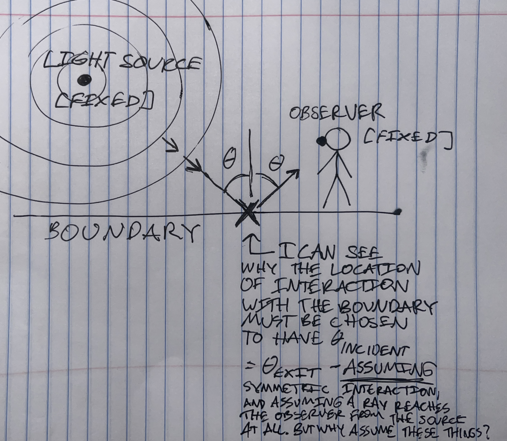
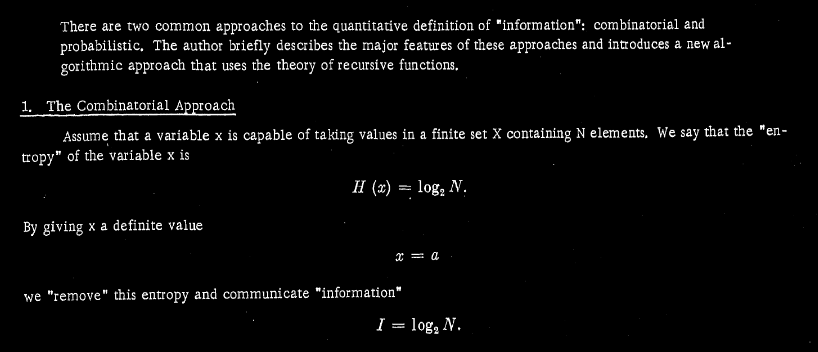
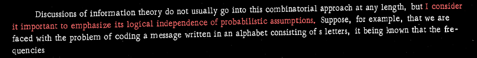
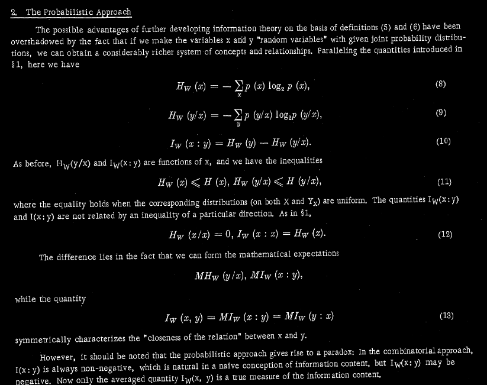
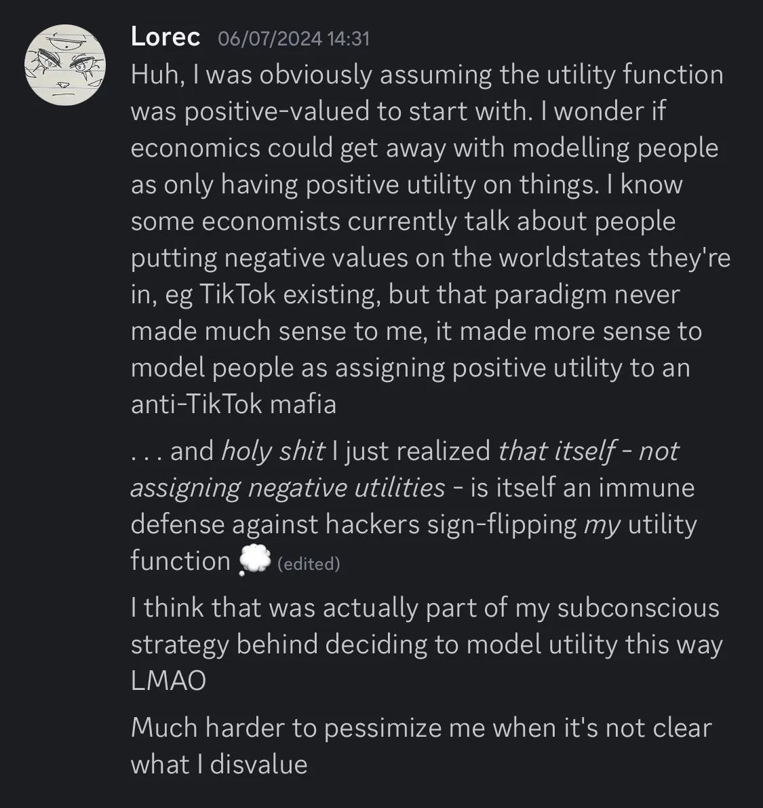

I was questioning yesterday, reading the Wikipedia page for cottonwoods, seeing how big they are and seeing Wikipedia describe them as particularly resistant to flooding, "Can it really have been a living cottonwood? If it was living, a lightning strike wouldn't have taken it out. And it'd have been too big to have been snapped by that wind, you would think. And the flooding wouldn't have uprooted it."
Well, I looked again today, and it was a living cottonwood, all right. The flooding didn't uproot it. The earth came up.
Unfortunately, I couldn't get these pictures yesterday, before they chainsawed off the branches that were sprawled across the bridge, because my phone was dead. But you can still see most of the wreckage [ I couldn't get pictures of the giant splinter I saw yesterday morning, but that was definitely there; maybe it unbuckled? ]
[ Yesterday the branches had been sprawled all across the bridge where the broken railing is. Chainsawed off. ]
[ My spot had been in what's now the deepest shadow there. The entrances are blocked off completely by boughs. ]
The first thing I thought when I saw the wreckage yesterday was, "Well, this thing was built in the '80s, when people still knew how to build wood bridges. I don't know who's going to repair it." Today I overheard a guy in the McDonald's saying the same thing.
[ 20 June 2025 ]
Probably the Last "Lorec's Life" Post I'll Make for a While, But I Have to Post This One
Yesterday morning, the morning of June 20th, the local forecast [ Waterloo area ] said rain/storms for the night of June 20th. I got up and saw that and shrugged, because it had also rained the night before last, which was why I had been hiding under a wooden footbridge, maybe 20ft away from a bike trail and 25ft away from a little creek, camoflauged by dense vegetation. I'd been perfectly fine and dry, so I didn't worry about it. But the rain didn't come yesterday evening. The sky was almost totally clear. I mentally shook my head as I went to sleep. "How could the forecast have been so wrong?"
Well, this morning I wake up and it's drizzling. "A little late", I think, "and this still isn't much rain." I grab my computer [ and all my other valuables I can't live without ] and walk to somewhere I can charge it and get Internet.
On my walk, I notice the sky to the north turning full-on sea green.
As I'm hurrying inside, rain starts coming down hard. I go in. It doesn't stop. I refresh the forecast. Every half hour it calls for more rain than before. Eventually there's a flash flood warning. But the streets are already visibly flooded. The rain blows in one direction, then the other, seeming not to come from the sky, but to materialize out of thin air. A traffic sign through the window flaps in the wind.
Of course, I know the stuff I left behind is going to be totally soaked. At least, the blanket is; hopefully the rest, in a trash bag, is too heavy to blow away, but if not, oh well. Again, I haven't left anything I absolutely can't live without.
A few hours after the start of the hard rain, it clears. I walk back to my spot, thinking I'm just going to take my Nasacort and then be off to the library.
A huge, living cottonwood has fallen across the wooden bridge I was sleeping under, obstructing it, blocking off both entrances to my spot, and taking out a bridge railing. [ Although it hasn't seemed to buckle the bridge. ] The creek, unbelievably, has turned "white", roaring nearly up to the bike trail.
I wade through the boughs. I'm able to extract all my stuff, including the blanket -- except for my winter hat, which I'd regrettably left in a rock crevice overnight.
Even though I judge I could probably fish the hat out if I'm willing to hunt a little, I don't bother trying. Because as I'm extricating my other stuff, trying to gauge whether the boughs that fell on my spot through the bridge beams would have harmed me if I'd been sitting there, I look up and see that I'd been wrong -- the impact of the cottonwood has put a deep splinter almost all the way through one of the two main load-bearing crossbeams of the bridge, underneath.
As I pull my stuff back up I see some guy walk all the way across the damaged bridge, through the tree, taking pictures; ill-advised, certainly, but it bore his weight, so I probably would have been fine.
On my way to the library I see another fallen tree. This one is draped over a park bench, touching it at one end.
[ 19 June 2025 ]
All The Stolen Voices
There's a guy named Jeff who had a building given to him to start a church in, after two attempts to raise the capital to buy it from stranger Christian investors. His wife didn't die of it when the doctors told her she would, but she still has brain cancer. As far as I can tell, he's an Earl-type dad to his kids. He has his church do service for the community every Saturday. You can apply online to have your lawn mowed if you can't do it yourself [ they don't only do it for certain people ]. I went to their soup kitchen [ cooked by an affiliate named Rina, excellently ] and they let me have two helpings and gave me extra food. Like, a loaf of bread and a can of applesauce and a jar of peanut butter. The signs that led me to the kitchen, which Jeff had personally plastered all over town a couple days before, said "No questions asked", and didn't lie. When I first showed up and saw all the nicely-dressed people I panicked and retreated halfway around the building, and they sent someone to chase me down and coax me inside. [ I wonder if they were thinking, "The homeless people where I'm from don't have social anxiety." ]
I know all the stuff about Jeff's life because he spent the soup kitchen sitting personally with the people who had come for free soup, and talking to us like we were adult human beings.
I thought, "Well, maybe you're an Earl-type dad to your own kids, and maybe this is all kind of weird, but it's also kind of nice. My dad would never waste his time with poor people when there were rich people around." Later, I thought, "My dad wouldn't even tell his whole life story, full of uncertainty and failure, with a heart open to comments, to his own wife."
Yeah, I know they want my soul. Yeah, I know there's no such thing as a free lunch. Yeah, I know I'm supposed to give back in a way I can't really, because I'm not Christian, so the sense of guilt I feel might not really be a mistake -- on Yahweh's part, if not on Jeff's. No, I don't really trust like that.
Jeff's son recently built a Mustang.
I think belonging to a "build a Mustang" type of family has something to do why -- in my judgment -- Jeff is the first person I've met since meeting Mel in October [ one of the other trans people from Waterloo ], who's not soulless.
He's probably the least soulless person I've ever met who has a stable full-time job.
Yahweh would have scrubbed all the Yeshua out of Christianity.
He couldn't, after all these years.
By some standards I am a millenarian.
[ 17 June 2025 ]
An Opportunity to Bang the Old Barrel
There are, in my opinion which may be shared by few, not many better ways to wake up as an occasionally-passing trans man than the confident voice of an unfamiliar swaggering dudebro yelling "What's going on, man?" in your direction. Even if said swaggering dudebro is a cop who probably thinks you're a methed-up 12-year-old.
Looking down toward him, I saw two separate cop cars parked at the bottom of the overpass, one of which was a Dodge Durango -- a "killer whale", although this one lacked the archetypal orca paint. Two squadmates milled about behind the brave all-American who had dared to disturb my peace. [ It was 6 a.m. near the Solstice; I'd been sitting up anyway. Later I would wonder if they had been parked down there for a half hour, waiting for me to stir. ]
This had been my third night sleeping under that overpass. It had been a pleasant surprise not to have been "dispersed" the first two. Between the unexpected reprieve, the fact that it was already morning, and getting correctly gendered, I was cheery and felt ready to start the day on the right foot.
I was wildly unsure how this would play out, though. Would they ask what had happened to my family? Would I have to spill all the sordid details only strangers on the Internet would believe? Would I be cornered into confessing my intent to stay vagrant, and provisionally jailed? Would something go on my record that would make it difficult for me to keep my Ritalin prescription?
The all-American had advanced up the embankment. "What's up?"
Not having had time to put my contacts in, I couldn't see his face. He was at an advantage.
"How did you end up here?"
There was no helping it. I would have to voice-clock myself. Leaning into morning huskiness, I said,
"I couldn't find a full-time ob. Don't know anyone in the area. That's about it." I shrugged through the blanket I was still full-body wrapped in. [ I wasn't wearing a bra. ]
"Are you a student?"
"No. I used to work at TTMT."
He considered. "Do you have ID?"
"Yeah."
I had to disentangle my torso from the blanket somewhat to rifle through my trash bag full of stuff, and then the pockets of the coat I'd been using as a pillow. "Here." I gave him my driver's license.
"What's that?" he said, pointing at the various detritus occupying a pocket I had turned open. My . . . bra? I thought groggily. What the hell was he talking about? Bras were contraband? Did he still think I was a cis guy, and was he living in the '80s?
He pointed again. "The . . . prescription." Oh. My pill bottle. Ugh.
His pitch rose. "Is that a needle?"
"It's a gel pen cartridge." I held it up. Handed over the pill bottle. "Ritalin."
The cops drew together and muttered for a moment.
I heard my name in the cool, projected voice of Female Squadmate, milling around halfway down the embankment and addressing her radio. Her cultivated tone of grim tension implied the perp by that name was dangerous but stable.
Now these were Cedar Falls cops, who look and act like movie actors hired to play cops; I didn't fear them by themselves. I feared the law. I found her and All-American hilarious. Where I'm from they don't need three officers to deal with one homeless guy. Nor do their cops appear to have social anxiety.
All-American returned my driver's license and meds. "What are you going to do?"
"I've been looking at places in the area."
Male Squadmate piped up helpfully behind him. "There's a women's shelter. . ." What, I thought, not even gonna mention the men's shelter, like my mom did? Expected, I suppose. My driver's license says F and it's not like it has pronouns. I'd deliberately picked my legal name to not embarrass me parsed as either gender. And I'd met 5 trans people, ever, in the Waterloo metro area, population 150K. Two of said trans people, a married couple, had moved to Michigan the previous week, leaving their third wheel presumably high and dry and looking for an exit. The reminaing two, I hadn't spoken to in nearly a year and would've been surprised if either was still around and planning to stay.
"Crisis center", corrected All-American. Well, there is a crisis center, I thought, but . . . it's a different thing from the women's shelter, which as far as I know is by application only. I intuited that, like my mother's, law enforcement's sense of the available shelters in the area was worse than nothing. They all stared at me like deer in headlights, waiting for me to make the next move.
Male Squadmate muttered something. All-American said, "The shelter will have a drug test." He put his hands up. "We don't care if you've been using --" Like hell you don't, when it'd be one of the best excuses to scrape me up off the streets by force if I refuse to submit to anyone "it's just something to keep in mind if you want to go there." He glanced back at Male Squadmate. "And it's only 72 hours. Temporary solution." Exact same words my mom had used. I calmly did not blow a gasket. Male Squadmate nodded.
"You don't know anyone in the area?"
"No, no one."
"Where's your family?"
". . ."
"Where are you from?"
"Storm Lake."
"Is there anyone in Storm Lake we cana call?"
I shook my head.
". . . How are you, right now? Do you want us to take you anywhere?"
"No, thank you. I'm good."
All-American's tone was deadly serious. "You don't look good. I mean, you're sleeping under an overpass."
Again, they were deer in headlights.
Sensing that they would take any excuse to end the interaction at this point, I got up, dropped the blanket, awkwardly disentangled my shorts legs from my crotch, and started picking up my shit.
"Where are you going to go?"
I mumbled something about places in the area again.
All-American's voice was a finger wagging. "Just so you don't sleep here anymore. Okay?"
"Mm."
"It might look like a great spot," I slept here all night, Einstein "but it's really not a safe place." I was really in a great mood, but that just about snapped me like a matchstick. It took significant effort not to say "Clearly not; lots of dangerous cops like you around who might disperse me".
Later, I'd think, Who the fuck is gonna stab me to death? This is Iowa! You'd have to take the initiataive yourself!
All-American gave me his card; his name is Luke Hirsch.
I went on my way; the cop-car train went on its. Not a single question about how long I'd been sleeping there. Although my spot was right next to the main road that led to the police station, meaning cop cars passed me all hte time [ it was a really great spot, right next to a public bathroom ] I was somewhat out of the way and didn't think I'd been spotted either of the previous two nights. I think Hirsch was afraid that if he did ask the length of my stay, the answer would be something like "Three weeks" and they'd look like idiots trying to explain how they'd let something like that happen -- while on the flipside, if that'd been my first night, the cops would save major face by keeping up the bluff "we're not uncertain about how long you've been here; we always catch bums promptly". If they had known precisely how long I'd been there, I imagine they'd have cranked up their intimidation factor by telling me so.
In any case, I decided I liked this cop's bullshit justification for enforcing vagrancy laws better than that of the officer from Newell, who [ in 2020 ] had claimed it was "too cold" for me to be sleeping outside . . . in a heated van. Clearly I don't have a heated house to go to, so I'm sleeping in a heated van instead!, I'd thought.
Vagrancy laws still strike me as nothing but deranged. I don't pretend to know much about how to cultivate Athens, but I know if you're scraping people up off the streets as a matter of course you don't get a working Diogenes.
I've been told that one of the ways to make it as a homeless person is to "get cops to like you enough that they don't enforce vagrancy laws against you". I suspect that advice is geared toward the lucky "HIC"-dweller homeless. Iowa cops, in my experience, don't have enough other work to do to ignore anything. Anything poor, at lesat.
Since there doesn't appear to be an economy of skill around these parts even for vagrants, I don't know what will become of me. It's just impossible for me to take any of this -- the "Matrix" -- seriously, anymore.
[ 9 June 2025 ]
My Current Life Situation and How It Got That Way
I've been told, while pitching my project proposal, that prospective funders won't want my autobiography, they'll want an elevator pitch of what I intend to do, plus proof of my skills in a job-interview-customary format that's digestible to them, like "I wrote $project for $organization that accomplished $goal".
I don't actually have a marketable work history like that, and hard experience tells me that trying to pretend I do will mostly result in useless critiques of my resume-writing craft.
I could go back to school, or grit my teeth and sign on to some morally bankrupt job and Einstein it.
The first option simply wastes too much time. I seriously considered it in February of '24; I came to the conclusion that I wouldn't be able to save up enough money to self-finance in fewer than a few years [ I was packing meat at the time ], so if I did it I would have to ask my dad to pay for it. The whole prospect was really unpalatable. In the end I found another lead, which I pursued for a few months, and dropped the college thing. The other lead went nowhere but by that time I was in a different standoff with my dad, so asking him to finance a return to college [ he's already paid for the equivalent of 4 years of state-school tuition ] had gone out the window. That situation has pretty much continued; either saving up enough for school or getting subsidized would require vastly vastly more logistical runway than I have at this point. I think a whole other class of miracles getting me funded in time to save the world is more likely than any determined pursuit of a degree actually succeeding in time to mean anything. So I'm making like Yudkowsky and biding my time, trying to get my shit together in case of miracles.
The Einstein-it route . . . I've tried, once, now. In some ways it sucked worse than anything else I've ever tried, including meatpacking, high school, and just straight up being an unemployed parasite in somebody else's home. It's easy as an autist to get your psyche crushed by all kinds of daily routines that feel inoffensive to other people, but Gervais Principle Worlduniquely felt like it was deliberately trying to drain all the humanity out of me as efficiently as possible.
Like I said in my last post, the truth is that I have a problem dad.
On March 25 of this year, I bothered writing up "the real story" of my childhood, recounting the outstanding traumatic events and their effects on me in explicit detail. It reads as "too melodramatic to be real", but not because it contains any out-of-the-ordinary-for-parents instances of physical aggression, such as it might be possible to prove using objective evidence or even be 100% certain of myself.
Its SHA-256 hash is b8b158fb5b6e2bcea89dd4e7f53589ebe8cfa32ffbf250878ed17f073b87f8df. It is available upon request.
The below autobiography is edited to excise that particular chunk of melodrama, as well as other "soft" influences on me when I was young, and focus on hard strategy.
It is certainly not enough.
But this really is all I have.
Autobiography
[ I was born in 2000. ]
***
My dad divorced my mom when I was 7 and my brother was 4 or 5, never told us why. The impression I got generally from adults was that he'd done it because he believed she wasn't in her right mind and thus wasn't fit to be a full-time parent to his children [ he worked from home by that point, so it wasn't like she had a monopoly on us even if she hadn't been working ]. I later learned this -- the characterization of my mom as mentally unfit to parent children, or at least less fit than him -- was in no way true.
He started refusing to acknowledge her existence, basically treating her as a ghost. Since our town contained only around 10,000 people, all of whom in high positions knew of my dad and his family, and very few of whom knew my mom, this completely destroyed my mom's social life. Other people imitated my dad and stopped calling her. She became a pariah in what had previously been her own community. After about a year she gave up trying to rehabilitate her image and fit in, and moved to the countryside to live alone and work remotely. Now she's a camper nomad. The experience soured her completely not just on marriage but on roots. Probably a good thing.
We did split custody, a half week with her, a half with him. He became so cruel to my brother and I in her absence [ and, for the first few months, his own mother's presence ] that my main aim became to get the courts to reverse the ruling, at least for me [ although my brother, at least initially, said he'd take the deal too ], and let me live with Mom full-time.
The courts, through my mom, redirected me into the psychiatric system. I kept telling every representative of the psychiatric system that my dad was the problem, blindly, naively, at first, thinking eventually they would issue the justice they'd promised, and force him to let me go. It never happened. I resisted my dad's attempts to bring me home once. He told me it made me a bad person. My mom didn't contradict him. Eventually I believed it. I became a pliable transient fixture of the therapist's office.
I was not allowed to skip grades. I was required to be confirmed into the Catholic church. I resisted, but only with words. The words meant nothing to my parents. They meant something to the school system, and they might have meant something to the priests -- the school system wanted me to skip up two grades, and the priests were adamant that those who didn't hold with the faith shouldn't be confirmed. But I didn't trust that the school system or the priests could do anything to my dad, so I didn't sell him out.
I realized I was not a girl. I told my dad I wanted to be treated exactly like he treated my brother. He became incensed and said it was disrespectful to accuse him of sexism. I never brought it up again. [ Every year I had to attend the father-daughter dance with him, in a dress. My brother did not have to do that. I did not bring this up because in rural Iowa, when it comes to matters of the family, the father is allowed to silence objections by saying, "well, that's different". He habitually took this liberty. ] I told my mom I wanted to cut all my hair off. She let me get a pixie cut. I hated it. My lack of enthusiasm was not noted. Enthusiasm in general was discouraged. [ None of this, by the way, struck me as particularly important at the time, and it doesn't strike me as particularly important now; I include it by way of illustrating why I didn't transition earlier if I have as much self-awareness as I'm implicitly claiming. ]
At one point my mom stopped talking to me because I'd taken a cardigan she'd bought me on vacation with Dad without returning several other cardigans she'd bought that were at Dad's house. My dad, snooping in my diaries, found an unserious suicide note I'd deliberately written in such tiny letters he would have had to squint to make them out. It was the first suicide note I ever wrote, to my recollection, and the last. He did not talk to me about my feelings, but I had a new therapist. The message was clear. "Don't slip up, or you'll get it". And I did start censoring my "private" diaries, after that. Eventually my parents got a completely unrelated opportunity to put me through an inpatient psych program, and jointly took it. Alleged anorexia, when I was 16 -- neither any of the blood tests nor any of the objective tests for body dysmorphia ever bore out the diagnosis, but the specialist unit psychiatrist took Dad's, Mom's, and my suggestible previous GP's word that I "fit the pattern". [ I had a male friend who lost a similar amount of weight by dieting, who had visited the same program and been ruled mentally sound. ] I resisted, but after that one ill-fated incident when I was 7, only with words. The words meant nothing to my parents and they meant nothing to the psychiatric system. The inpatient psych unit stay took me out of school for almost two months.
I applied to all kinds of good schools. I got an interview at MIT and then got deferred [ probably largely thanks to the FIRST Robotics team I'd started at my school for that exact reason ] [ no, it's not hard for most people who apply to MIT to get an interview or get deferred; for people whose schools don't offer any technical extracurriculars, I don't imagine it's a matter of them taking your word when you say you love to code ] but was denied in the final round, and didn't even make a significant first round at anything else national, except Olin. In-state I made Grinnell, affectionately called "the Harvard of Iowa" [ it's the only place in-state with an EA scene ]. I knew I had to go to Grinnell or Olin or I wouldn't be able to move up a social class. Dad said Grinnell was too expensive. I said I would take out a loan. He said no. I was 17 and realized I didn't expect to win if I picked the fight. Mom said the drive to Olin for the second round of admissions was too far, including for me to make myself. I realized I was fucked. Dad paid for a year of UIowa.
I majored in bioengineering because I wanted to get paid to develop cultured meat and then finish what de Grey started with SENS. And I figured that, in the engineering department, I would be better positioned to take classes that would help me work on alignment theory later, too, if that was something I needed to do.
During my first day and a half as a Bioengineering major, I was oriented to exclusively either shop/CAD classes, or bullshit Boeing-slash-six-sigma-coded proprietary "principles of design" classes [ I wasn't familiar with either Boeing's design philosophy or Six Sigma at the time, I just knew I was looking at a whole lot of exhausting bullshit that was not going anywhere good ]. I knew what actual college-level physics classes looked like, because I'd already taken them [ dual-enrolled at my local university ]. I'd been expecting "that, but more advanaced". These classes were not that. This was so discouraging that I immediately switched majors to Biology. That was somewhat less contentless, but those classes didn't teach any concepts, either. My Bio and Chem classes, the "hard" classes, were mostly just memorizing long lists of trivia for tests. Over the summer, I took two electives that actually taught concepts -- Ethics and Japanese History. Those, plus my Rhetoric class, were the only three classes I took at that school that actually taught concepts.
I also interned that summer at a lab. It was Maurine Neiman's lab, and I interned there because I was interested in the problem they were trying to solve -- the problem of why sex exists at all, also known as the problem of males. During my interview I said I was applying because I wanted to solve the problem. She laughed and said she'd been working on it for decades and she doubted her lab would solve it. The job was to crush snails [ I was a vegan; this was my "being a ruthless consequentialist and making money crabbing". Although it wasn't primarily the money. The job didn't pay very much; I was mostly thinking "any successful gerontology program is going to have to sacrifice animals". Later I would pass up a high-paying meatpacking job on an ethics basis ] and prepare the remains for gene sequencing, and also some manual validation of the sequence data in Sequencher.
That fall I was so put out with the dead end of the Bio curriculum that I switched my major again, to Mathematics. I was scheming to either graduate two years early, or hopefully finagle a transfer to Dartmouth so I could actually move up into the social class where they let you do non-meaningless scientific research or engineering or at least talk to rationalists [ I was concerned with becoming a rationalist because they were interesting and actually got to do things ]. The first lesson in my first math-major class was an introduction to LaTeX. It was, somehow, more of the same thing -- another shop class, another rote memorization class. No concepts.
I snapped, dropped out, and moved back home [ I had been telling my dad for a while that I was "struggling with depression", and had, as I had so many times before, dutifully gone to a little-better-than-cardboard therapist about it to prove that I was Trying My Best ]. At first I was pleasantly surprised at my dad's measured reaction to all my bullshit, including saying that I didn't want to see my mom [ I had gained 25lbs and was justifiedly terrified that she'd make fun of me ]. I was kind of crushed by the whole thing, though, and hardly left his basement for a few months. My dad helped me get a Ritalin prescription, which basically cured my executive dysfunction, but my token attempt to return to college in my hometown that spring semester still failed within 4 months; I could feel that it was going nowhere.
During this period, I was doing a decent amount of meditating. The Ritalin had taken care of a good deal of my executive dysfunction; I wanted to finish the job. I was reading @nosilverv and Qiaochu and all those people [ mind you, this was like the 24th humanities school I had waded into, so I did not get memetically captured ]; I thought they had some good ideas but were fundamentally wrongheaded; the purpose of any good enlightenment program should be worldly achievement.
One day I was thinking about gender and "brain sex". I wondered about a hypothetical future advanced fMRI analysis that could show whether a person was internally male or female. I asked myself, how would I feel if the brain scan showed that my brain sex was female? My subconscious answered, "Unsurprised". I asked myself, how would I feel if the brain scan showed that my brain sex was male? My subconscious was incredibly disoriented by that prospect and quickly settled into "I'd feel like an idiot for pretending to be a girl all these years for no reason!" I realized I really hated pretending to be a girl, and it had been getting to me, and that feeling was much stronger than any sense of identification with the female sex. So that night I locked myself in the bathroom with kitchen scissors, turned all the lights on, and quietly cut all my hair off, the way my mom wouldn't tell the hairdresser to do 6 years before.
It looked kind of jank. I loved it. Something in me moved firmly off the fence to "yeah, I've been a boy the whole time".
The next day my dad and my stepmom, Emily, sort of cleared their throats and asked if it had been for gender reasons. I said yes but they didn't need to worry about it. Mercifully, they didn't press. I haven't gone to a hairdresser since.
One day I was meditating and accidentally gave myself fairly bad heart palpitations [ among other symptoms ]. Since I was 9 I'd been inclined to catastrophize about potentially fatal conditions and try and get myself rushed to a doctor [ this surprisingly doesn't feel like it contributed that much to my gradual habitual institutionalization, although I could be wrong ]. I didn't want to make a scene, but I didn't feel like riding out the panic attack staring at the mental image of my body laying undiscovered in a corner because my family hadn't noticed my absence, so I lingered downstairs and told my brother [ who had a diagnosed arrhythmia ] that I felt like I was having worrying cardiac symptoms. He told my dad. My dad said "we're going to the doctor". I think he saw something in my eyes, because that was not his usual line when I slipped up and said something catastrophizing. I didn't really have the juice to argue. I told myself I would play it cool.
My previous GP had retired, so I would be seeing my dad's family's new doctor for the first time. My dad and stepmom said they wanted to accompany me into the exam room. Again, I didn't have the juice to take a stand. The nurse during intake went off script, presumably because she was confused why exactly the hell I was there. Trying to be helpful, and use the acute awareness of my unconscious nervous system I'd been developing, I creatively described my symptoms as "like a reverse panic attack" -- because, unlike a usual panic attack, my heart rate was slowed, and my parasympathetic nervous system felt more active than usual. I also let my curiosity about the nature of the symptoms I had given myself get the better of me, and asked the nurse "Do you know if alcohol decreases brain entropy?" because my hypothesis was that Ritalin plus meditation had had the reverse effect. She gave me a look that said she had never heard the phrase "brain entropy" in her life and thought I had made it up. Oh, fuck, I thought. [ "Oh, fuck", as it turned out, was right. I was fully aware that I was actually experiencing hemisphere shit -- [ no, I had no idea who Ziz was at the time and wouldn't learn for another year ] -- I'm at least sort of bicameral even though not everyone is -- and I can only imagine what would have happened to me if I'd talked about that. As I remember it, not even my naïve ass was anywhere near that stupid. ]
The new-to-me GP, Dr. Shepherd, came into the room. I think for like half this conversation the nurse was in there too, so there were five people. Four of them would quickly converge on the nigh-certainty that I was schizophrenic.
This happened with the aid of my father lying and answering "yes" when the doctor asked if I had a family history of psychosis. "Yes", he said, "on her mom's side". If Shepherd had checked, she would have found that this was a total fabrication on my dad's part. But why would she suspect him of lying?
I was mostly silent as Shepherd lectured and the nurse, my dad, and my stepmom all nodded enthusiastically. I would have only shot myself in the foot by talking. In fact I could feel myself shooting myself in the foot by trying to defend myself as much as I did. I, as someone who had done actual serious psychology study, unlike my new general practitioner, knew that schizophrenics almost always had persistent auditory hallucinations. I knew that medicating a syndrome that, from her perspective, could be schizophrenia prodrome or the much more common case of 'perfectly ordinary depression that just happened to have occurred in a 19-year-old' with antipsychotics had negative expected value. But she had decided on a diagnosis. To everyone else in the room at that point, even and especially my own father, Shepherd's words were the educated proclamations of a doctor, and my words were the unfortunate gibberings of a madwoman.
Shepherd prescribed quetiapine. And scheduled a follow-up appointment.
I said I wasn't going to take it. My dad, as he's wont to do, said "we're going to have a talk". As usual, he sat me down across from him in his living room, and Emily by his own side, symbolizing that they were a united front [ which functionally meant she would back everything he said ]. I Filibustered. Harder than I had about getting confirmed into the Catholic church five years previously. The Ritalin had significantly thickened my spine. Plus, I was rather motivated to hold on to my fucking IQ points. I had brought a neuroscience book, and my phone to look stuff up on Slate Star Codex. I made the case that schizophrenia was a specific condition and that I didn't show the characteristic signs of it. That basically got a "that's nice, honey, but you're not a doctor". After failure became clear, I despaired of that and said "it's my body", implicitly invoking "my body, my choice". As always when I invoked liberal principles against him, my dad was enraged. "Oh, come on," he said.
They didn't physically force me to take the meds themselves. I was a grown adult. It would have been hard. But they were put out with me, and said I would have to take it up with Shepherd. I imagine they expected that to go their way; the previous case had.
At the follow-up appointment with Shepherd, I brought my calmest, most professional self, and came prepared to gently explain psychiatry to her. It actually somewhat worked, even though my dad and Emily at that point had every excuse to insist on being present in the exam room with me, so there they were. Shepherd admitted that the case for my psychosis [ which she'd already diagnosed me with, which is now indelibly-to-me in my medical record and has cost me a security clearance ] wasn't actually strong enough to justify forcing me to take the meds, but claimed she couldn't in good conscience clear me herself [ whatever that meant ] to continue on a regimen of stimulants and no antipsychotics, and I'd have to get a second opinion.
I was redirected to Tennaea Jeppeson of UnityPoint Health Berryhill in Fort Dodge. She seemed as weirded out by the concept that I'd been diagnosed with psychosis as I was, and as happy as my previous psychiatrist [ Dr. James Snowden in Sioux City, now retired ], who'd prescribed me the Ritalin originally, to treat me as a run-of-the-mill ADHD case.
I dropped out of school. Again. [ This time none of my dad's money was directly wasted; tuition at the local college was free to me because Emily was working there. ] I was optimistic, this time, though; I felt like all my meditation was finally paying off in the form of better internal coordination. I had lost hope that I could succeed within the university system, but I felt like my future was bright outside of it. Peter Thiel was paying people to drop out of college, wasn't he? Yudkowsky hadn't even gone to high school. I wasn't terrible at cellular biology or physics, and I could certainly code and do math [ my professors said I was mastering the material in C++ and Stats, if intransigently; BVU just hadn't been "going anywhere" enough to keep me sane ]. I figured whatever the startup people had, I couldn't be missing it. It wouldn't be easy, to succeed as a technical researcher without a degree, but unlike weathering the assault of dead-end classrooms on my psyche, it couldn't be impossible.
My dad said it was fine if I applied to work where I had worked in high school, at the store that was managed by one of his friends, but nowhere else was good enough for him. Covid was his excuse.
Well, I had read HPMOR in high school; it hadn't saved me from his first attempt to commit me, but again, the Ritalin had thickened my spine. I applied to jobs behind his back. I went to work at Goodwill. When he found out I had gotten the interview, I watched his initial rage melt in real time into the realization that there was nothing he could do to stop me from going without incriminating himself. I think my disobedience genuinely caught him off guard.
The Goodwill job was full-time. Compared to any kind of school, it was paradise. It was actually easier to "Einstein it" at the Goodwill job than at the white-collar job, because I just had to do it, I didn't have to put up a wall of Professionalism at all times. I kept reading about neuroscience and probability theory. I was following Yudkowsky vs. TPOT, and becoming increasingly worried that the TPOT side didn't have much to say for itself on the "do we need to prioritize technical alignment?" front.
Sick of living with my parents [ I was back and forth between them again now ], and impatient about the time it was taking to save up enough to pay a deposit, I tried living in my Dad-gift tortured beater SUV, Eurydice, a couple times. This was how I found out cops will actually enforce anti-sleeping-in-your-car laws even if there is no one else around and you are affecting literally no one.
Instead of simply permitting me to search the town for apartments, my dad responded to me saying I wanted to move out by saying "my lawyer friend rents out the room above his law office; you can move there [ and nowhere else ]". He took me to tour the apartment above the law office; it seemed OK, and I figured it wasn't worth it to fight my dad on letting me choose where to live right out the gates; he wouldn't be able to supervise a secondary apartment search once I was out of the house, I could just move again without his input [ and in fact that's what ended up happening, less than a year later, although not because the Redenbaugh place had turned out to be less than perfect -- just 'cause they would end up kicking me out to remodel ].
I moved out in January of 2021. Concurrently, hearing Eliezer on We Want MoR convinced me he was Really Serious about the doom stuff. I read the Debate on Animal Consciousness in February. I realized my animal activism had been misguided, felt like an idiot but at least an idiot who had erred on the right side, and quietly started eating animal products again. In March, two things happened pretty close together: [1] my ear infection closed my right Eustachian tube and gave me chronic right-body-lateralized vestibular dysfunction, and [2] while trying to compose a refutation to Yudkowsky on alignment, I realized that, under current social conditions, uncontrolled mass human uploading would just lead to "a Lena scenario but with the potential for the ems to self-tweak" -- which was just the alignment problem all over again. We really did have to solve technical alignment, even under the best-case takeoff scenarios. At least, that's how I saw it then, and how I still see it now.
Well, then I did a bunch of crap. I dissected my computer, I read Turing's "On Computable Numbers" and Mike Brown's "Computers From First Principles"; I tried Russell and Norvig's "AI: A Modern Approach" too, but that didn't impress as much [ later I would find that I liked Norvig's "Paradigms of Artificial Intelligence Programming" better ]. I got copies of Aristotle's works and "Probability Theory: The Logic of Science" and "Theory of Games and Economic Behavior". I gave the Feynman Lectures an nth try and just got pissed out of my mind again. I moved up to the higher-paying meatpacking job now that my ethical scruples were gone [ I still had meta-ethical scruples, but I couldn't afford to heed those ]. Eurydice having finally been found dead/"unsafe to drive" on serious inspection [ cough cough like I'd known she would, hence the name cough cough ] months ago, leaving me to walk to work, I bought a car. I got my genome sequenced with Nebula, thinking "I might need this later" [ No, not to clone my personality like they did to the Shatner expy on Black Mirror, I know that didn't make any sense and it still makes me mad. For genetics research ]. I went on r/personalfinance. At some point in there I read Zizians.info and, without actually ever visiting Sinceriously because it sounded like a headache for several reasons, wrote a really stupid post where I made an invalid argument for the, it turns out, false, proposition that my right hemisphere wasn't conscious. Because I was afraid of having spooky dual consciousness cooties, I guess. [ It really doesn't have to be a big deal. I'm just Garnet. Everyone, correctly, loves Garnet ]. And I think I was frustrated with the leftward oculomotor bias the vestibular issues were giving me, and erroneously blamed that on my right hemisphere. I also made a lot of other posts on that blog.
Around this time I was also recording and publishing a politics podcast with my friend James. I can't prove it now, because I asked James to take the original season down for fear of blowback [ the short-lived second season is here ], but we beat Iarwain to public advocacy for eugenics-as-Galton-conceived-it by several months [ episodes in question also available upon request, on the off chance anyone is interested ]. It wasn't getting much traction, though, and after 11 episodes I confessed to him I'd lost steam. I'm not sure he had much enthusiasm left either.
In October of 2021, I had run out of ideas for how to make myself better at helping with alignment theory. And with CLIP/DALL-E and everything making timelines seem really short, it didn't seem likely that SENS would matter much, if alignment went unsolved. I reached out to Yudkowsky basically asking what I should do. He basically said to learn to code. I was like okay! Like, I thought I knew how to code, but, maybe there were unknown unknowns.
I taught myself every software thingexcept Haskell and Rust [ unless you count, like, Windows or OpenGL proficiency ], and only found out later that this made me "cis-coded".
I'd had to go back to Goodwill because packing meat ~50 hours a week with no Internet access didn't give me a feasible amount of time left over to study AI. Even at Goodwill, I eventually hit a wall trying to self-study software to a point where I would be useful at alignment theory. Years before, I'd looked into BloomTech as a promising alternative to "transferring into a prestigious college". I'd decided it seemed too seedy then; it looked like my only option now.
I'd actually forgotten this, but my dad found a way to be the unambiguous villain here, too, even though that should have been impossible. Call him Life, 'cause he finds a way. I told Dad that I wanted to do the Income Share Agreement version of paying my bootcamp tuition, which would cost him $0. He said no, that seemed too weird, and he would instead put me into $30,000 worth of debt to him by paying my tuition up front. Ultimately, I didn't get a software job, partly because the schizophrenia diagnosis Dad stuck me with prevented me from getting the security clearance that would have qualified me for the job offer I did get, from Shyft Solutions, LLC [ There wasn't any conceivable other reason for the Department of Defense to deny it. I'd never done drugs or had any foreign assets, and eventually the whole thing got hung up on them trying to get an interview with Shepherd. ], and partly because BloomTech is gonna work less hard helping people job hunt if BloomTech getting paid doesn't depend on those people getting a job. I wonder if Dad feels intelligent for forbidding the ISA now. Who can say. I'm definitely very financially helpless, which I'm sure he just hates.
[ I'm 90% sure he only helped me get the Ritalin prescription because, with his poor understanding of psychiatry, he thought it was guaranteed to at least marginally lobotomize me. He's an amazing guy. ]
After abortive [ on my end ] attempts to do food service and merchandise stocking as side gigs while I secured a salary job, I emotionally crashed out and had to go back to meatpacking. I started the job in February of 2023. It was at the beef plant in Sioux City, though [ Dad had moved cities and I'd moved with him ], which fortunately turned out to be a just-barely-tolerable ~42.5 hours a week with a regular schedule. I soon moved out again, into a tinyhouse in Sioux City [ the A/C unit in the photo was installed after I'd moved out ].
I was genuinely fucked at that point, and I was mature enough to confront that fact. But I figured at least I was dying on my feet, financially. Too exhausted by my work and the utter hopelessness of reality for any serious research pursuits, I fucked around, gave the Feynman Lectures an nth-plus-one try, made some friends on Discord, made some art, wrote some glowfic, hung out with James, and customized an Arch install. I kept throwing my resume at stuff on Indeed and LinkedIn, but I didn't actually expect to hear anything in return, and I didn't.
My dad started dangling the prospect of a nepo white-collar job at his company in Cedar Falls in front of me more aggressively than he had before. I later learned it's illegal for his company [ Talk To Me Technologies, "TTMT", then-recently sold to a British competitor called Smartbox with my dad remaining in place as CEO ] to hire on the basis of family relations. I think he thought that by the time I had his company's legal stuff in hand to read through, I wouldn't want to notice that. That's probably how it goes for a lot of people.
Anyway, it took fifteen months of meatpacking for me to be like "ugh, I guess literally anything is preferable to 'continuing to face down a 100% chance of dying without having had any effect on reality whatsoever', even working for my dad's company".
On my first day, I told one of my new coworkers that everything looked surprisingly polished. He gave me a knowing smile and said, "Wait a week. The cracks'll start to show." Yeah, it didn't take a week.
During my first week, another of them asked me "Sorry, this is kind of personal, but is Marty your dad?" I said, "yeah". He gave me a look of horrified empathy and asked, "What's that like?"
I soon learned that some of my father's 200 remotely managed underlings know him as "Mr. Businessman", and all of them treat him as a kind of poltergeist. [ Pussies. ]
The most competent person on my team [ not me, an older hand ] was trans. He kept getting passed up for promotions in favor of cis people. There were rainbow and trans flags everywhere.
I once described the general business model of the company to a friend, who said "deceiving someone and having it be technically legal is very pretty and Asmodean to me".
If you want to understand what the relationship between labor and management was like, Golarion Hell is actually a pretty good model for that, as well.
Once when we were all sitting around on our asses pretending to be super wrapped up in the Microsoft bloatware because there was nothing to actually do [ a frequent occurrence ], one of my team members patted himself on the back for not working at the casino games corporate office next door. The guy next to him was actually a transplant from there. That's my dad's specialty, being the technically better lizard.
I'm not describing in more detail how the job itself was fucked up because I don't want to give myself more legal headaches than I absolutely have to.
I had to credibly threaten my dad's livelihood to get him to stand down from using my diagnosis to sic authorities on me, and let me quit. Fairly typical Marty Gallagher nonsense. It's over, unless he happens to have secret friends in higher places than me up his sleeve.
For whatever set of reasons, surprisingly-to-me, after that I couldn't find a job or combination of jobs in Cedar Falls that gave me enough hours to pay rent. No factory or landscaping company wanted me, including Kryton Metals, where a TTMT coworker who had previously worked there graciously put in a good word. I got what I thought was a full-time job at the Goodwill in Waterloo; turned out it was only part-time, and they didn't seem to intend to raise my hours anytime soon. I got a second part-time job at a restaurant in Cedar Falls, and worked both jobs simultaneously for two weeks for slightly more than full-time hours, but after that I couldn't get either of my bosses to keep scheduling around the other, and still neither was offering full-time hours. I terminated my apartment contract. I had to ask Mom for help with the last month of rent [ $850, to calibrate you, even though this is Nowheresville ].
I announced my project and started reaching out to people and applying to EA grant programs. I actually got into CEEALAR, but couldn't scrounge up the money for the plane ticket. Everywhere else turned me down, including the EA Fund, two weeks late with a form letter begging my pardon but telling me further feedback was unavailable [ I say this not to damn the EA Fund in particular, but to illustrate the point of "this is not actually as trivial as you think it is" to the genre of person who likes to tell me that it's trivial if I just put myself out there ].
There was a time, before mid-2024, when I thought I valued appearing net beneficial to the world over feeling like I was actually doing anything to save it. Somewhere in there the chance to die appearing net beneficial was ripped from me and blew away in the wind. Now all I have is the effects I actually cause. Which is a shame, because they aren't much.
I've done some technical-theoretical work I'm fairly proud of at this point [ largely my LessWrong and Substack posts but also some not-currently-public stuff ]. Most of it has been done awkwardly living on my mom's and brother's money [ I've been living with my brother since January, so almost 6 months ] and biding my time with decreasing panic and increasing bemusement at the question of how society is going to figure reintegrating itself with me. I'm terrible at politics, I suppose. And I suppose I think I'm better than you.
End Autobiography
I told Gene Smith recently, I don't think we have two more generations of free runway. That's why, if we're going to work on a heavy medical problem, it has to be longevity, not intelligence enhancement, because unlike intelligence enhancement it's really plausible that longevity gene enhancements will work on adults. And we don't have time to wait on human embryos to grow up to even find out whether our therapy worked.
People who expected to live forever otherwise would be a little more hesitant with the big red button. And those are what we'll get, if we follow my plan and it works. [ And I think it'll work; Aubrey de Grey doesn't even argue that a much less comprehensive route to "minimizing ROS generation rate" wouldn't, in his own words, "also slow the rate of aging in humans attributable to most other causes by about 50 percent". He just argues that more is necessary for "true longevity escape velocity". Which, come on, "complete SENS" isn't going to come all together, wholecloth, as the first step, at this point. ]
The governments of Earth are not going to come together and solve this.
We don't have time to make superbabies.
Yudkowsky's standards for adult intelligence enhancement started out somewhat realistic but have been getting ridiculous, and his plots for how to achieve it started out ridiculous and have been getting worse.
There is no alignment by default.
Caring harder will not make the AI care more about us.
The AI will not do our alignment homework for us.
Somebody has to do the fucking homework.
Or we're all gonna die. [ Call me Sandwich Board, 'cause I'm all out of significant digits. ]
If Elon has it in him, after all, good for him.
If none of you do, I'm going to be here, watching, observing every moment of it, and calling you all on your bullshit the entire time. Until. You. Fund. Me.
[ May 16, 2025 ]
The Way To Immortality May Not Lie In Y'all's Matrix
I.
I have a friend who's trans the other way.
She is 3 years younger than me [ 21, I'm 24 ] and has spent her life being a problem to the system whenever it tried to waste her time and energy.
In exchange, she has been exiled to the fringes of society, and doesn't get the luxury of normal relationships.
Everybody else thinks her problems are her own fault.
It's the exact same bullshit they say to me, when I complain that the system is beating up on me for being a perfect citizen.
I have realized that it literally doesn't matter what you do. Moloch [ or what remains of It, since I believe that god has died just like Yahweh ], will attempt to put you in one of the little pods and scrape every ounce of psychic energy out of your skull that It, or Its remains, possibly can.
The more vulnerable you are, the more It[s remains] can get away with this. No one, in the Matrix, is incentivized to help you, if you insist on resisting.
I would preorder, because it's all pyramid schemes, we're just choosing between different lizards at this point, but I literally don't have a dollar in my bank account.
My friend started refusing to go to school when she was 12. She would just walk out.
Why when she was 12? Surely it was male puberty?
As someone who also has a problem father, I believe her when she says it was because CPS finally took her and her brother away from their dad, who would have beaten them for disobedience at school.
She was sent to alternative schools. Where they would lock the doors from the outside. In one of them, there were no wall clocks, and being told the time was a reward for only the most obsequious behavior. She did everything she could to get her mom to bail her out of those. Eventually she did.
Well, without school you have no social life. She just had her electronics. One day the last of them broke while her mom was away. She vandalized the house out of anger. Her mom came home and called the cops. Friend said, "You idiot! They're going to send me to the nuthouse!" because the alternative schoolmasters had been threatening this for a while.
When the cops showed up she was holding a knife. She said "I don't want anyone to get hurt". They promised not to tackle her if she put down the knife. She put down the knife. They said, "Get in the car or we'll tackle you".
Three months later, three months into her stay in the abusive madhouse, she had to inform her horrified mom via elaborate steganography that [a] the madhouse wardens were physically abusing patients [one was beaten with a shoe and another was shoved and had an entire box braid [?] yanked out], and [b] they did not intend to let her go. And her mom had to spend a vast amount of resources busting her out.
So I think it's safe to say that my friend was right from the beginning, and the last thing her hapless mom should have done that fateful day was call the cops.
What is there for her [Friend] to regret?
What "future" did she really have, in the first place, to lose?
College, sure. A job she could work, at the end of it, that would pay her bills? A house? A wife?
"Polite society", which is middle-managed by normie boomers who don't understandtranspeople, and top-managed by ruthless capitalists for whom it is useful to have the younger generations strung out and desperate for pittance tokens of status, dismisses her emotional needs as luxuries she may or may not earn fulfillment of through a lifetime of devoted toil. "Serious medicine" dismisses the narcolepsy-like sleep disorder that originally made school difficult, and now puts a job absurdly out of reach, as a deficit of character ["within normal human variation", thus not deserving of treatment] if not a hallucination.
Compliance, I know from inference and personal experience, would simply have earned her more, and stricter, demands for compliance. If she had gone along with it up until this very day, she'd be looking around and realizing she now had all the work of establishing personal sovereignty cut out for her. Like I am.
Yes, I am prepared to ally with "people like that". Yes, I would want her for a roommate. I would give a finger for rent to be paid in perpetuity on, say, a duplex we could split down the middle. My medianworld veers on the pacifist. There is such a thing as disproportionate retaliation, and it's not her, it's what's been done to her. Mainly, it seems, for existing.
II.
I've had a habit over the past couple of years, for a combination of penis envy reasons and worldbuilding curiosity reasons, of watching construction workers whenever I saw them. I kept deciding that, in the same way as doctors have been anti-helping patients lately in particular, construction workers have been standing around in groups of three waiting for one of them to figure out how to hammer in a nail lately in particular.
Yesterday I saw an instance of this: three guys standing around in high-vis, one of them slowly, awkwardly trying to do something with a jackhammer.
I thought that I felt like more of a jackass entitled wannabe slave driver noticing construction workers getting worse at their jobs than doctors, especially since at this rate I'll never have a real job of any kind.
Then I realized my brain was defining "having a real job" as "having my own slave driver who I had to listen to".
At a certain point, my brain must have internalized that shares in the system are measured in negative numbers.
A couple of hours later, I was sitting under a shade tree, listening to the jackhammer, and arguing with strangers on reddit about the cause of zoomer unemployment. I was told the problem was that I wasn't just walking up to the guys with the jackhammer and asking them to teach me how to use it. By fuckers with Rolodex jobs.
So it goes.
I do think OP of that thread had a point. Zoomers are missing "professionalism". Now, I can say this, because I'm a zoomer: in my dream last night, I was hopping a train to LA, so I could hop a plane to North Korea, so the Lazarus Group could teach me how to beat Sam Altman to uncontested world nuclear supremacy. My friend had blackmailed some embezzlers with tickets to ride to let me sleep in their compartment. Only they got handsy, so I escaped to one of the 24-hour lights-on compartments. And there were zoomer strippers [ that's the part I can say because I'm a zoomer, I'm not so ageist as to think it spiritually above geriatric patients to defect to the DPRK ].
Even in the dream, my brain did a double take. "They look younger than me - but they're professionals! Making carefully-measured flirtatious eye contact and wearing real, natural-fiber lingerie!" There was something incongruous about people my age, volunteering their souls to play a part.
We are told our poverty stems from our characteristic pathetic meekness and not the other way around.
I was told that the reason I wasn't the guy with the jackhammer was that I didn't walk up to him and ask him how to use it.
Like I said in that reddit thread, "this has everything to do with regulation, capital inequality, and fiat-currency macroeconomics". [ Hi, my name is Lorec, I'm a world expert in everything, I can supply you with terrifyingly technical explanations. You don't want them. A lifetime of hard lessons tips me off that, for some fucking reason, you are a crazed suicide, and you want the knee of probably the one person who actually might be able to gene-edit you to eternal lifeandalign the ASIwithout a cryopreservation phase. You won't get my knee, you poor bastard. ] Like Peter Thiel said in a private email, and Yudkowsky said paraphrasing planecrash, "if society tells someone they have no property, they have no stake in trying to coordinate with that". I am an Objectivist. I owe debts, now, to Marx and "terrorists".
III.
I have a sob story, too.
Suffice it to say, my dad has been quietly scheming to get me committed and medicated into silence since I was 7 years old, because I accused him of trying to enslave me and my brother and tried to physically resist him once. I've been trying all the obvious things to counter him, including getting a 4.0 GPA with math and English classes 2 years ahead of my grade [ couldn't skip grades, he forbade that, and the list of shit he did goes on . . . ], petitioning my school to order the AMC 12, self-studying and getting a 65 [yes, I know that's not that high], starting a robotics club, going out for speech and music and cross country, getting a job . . . Still had to have my own stay in a madhouse when I was 16. And get antipsychotics pushed on me when I was 19.
I didn't lead with it not because I'm embarrassed or because it's somehow inherently compromising to me. I didn't lead with it partly because it's not over, and trying to center it in the middle of that might make it worse, and partly because I want to make it clear that this is not about me. In fact, if the thing that was fucked was any smaller than "all of society", I think I'd have had it dealt with long before I had nothing better to do than whine about it to the Internet.
I really didn't want to make this a whole big melodramatic thing. I didn't want to have to brandish my brain like a savage, or issue vague schizophrenic warnings about my connections to the world narrative. Especially since I've been holding my damn breath on that for years in the hopes that we could do this some kind of way that was sane and normal and involved mutual respect and compassion and reasonable compensation for voluntary, productive labor [ And we will have to involve those things, in the end! "I'm not trapped in here with you, you're trapped in here with me!" ].
In fact, the vision was near and dear to my heart of waiting in the wings, remaining decent, until someone came by me honestly, and offered me a place in society, without my having to do any of this thuggish, belligerent "self-promotion" that you Earthlings worship so much.
But you lemmings [sorry!] remained intractible, and I don't actually respect your right to kamikaze me along with you, so I consider my hand forced to engage "prematurely".
Yes, I know I can't just do what others have done and get what others have gotten. Yes, I know a Secret Service agent showed up at Nicholas Decker's house and that's probably the good outcome for me, seeing as I dropped out of college and am a nobody who lives in bumfuck nowhere. Yes, I know all of this would go a lot further if I had already gathered an actual audience, by those incredibly effective, dishonest means everyone else seems to have. Yes, I know it's textbook foolishness to chase clout under the black flag before you ruin your legal status. [ How will people know you have a stake in the system if you're not shooting your own foot off? ]
Did you know that I'd have a lot more fishes if wishes were fishes, and I'm probably not gonna wake up tomorrow with Princess Luna having descended to abduct humanity to Sugarcandy Mountain? Like Yudkowsky, I am now acting with severely limited options; unlike Yudkowsky, I wouldn't call any of them "dignified".
I am not going to die. The world is not going to end.
To those among the wealthy with a properly transhumanist sense of self-preservation [and I doubt, now, that there were ever enough of you to need to be counted on two hands of fingers]: This is where you either start asking how high, or watch things get really interesting.
To the genuine ideological neoreactionaries: Maybe you people could do with a dose of Julian Jaynes. Your fundamental problem is you don't believe in Athens! Do you think it was a psyop, all that peace and intellectual progress? Perpetrated by whom? The aliens you presumably believe did the pyramids?
To the Zizians: You're good people, but Yudkowsky was right about animal sentience. I suppose he's too tired to explain it to you. Well, my PGP public key can be found here and on Signal I'm `mack.11`. On Discord I'm `kaventekeit` if anyone still goes for that. I generally don't argue that particular case publicly because 99.5+% of carnists are just doing a flat-out abominable thing on theirworld-model and I don't like giving them excuses. My first turn of the discussion would be, "how do they know this thing is 'insentient'?"
To Jamie in particular: I get it, but still a thumbs-down from me.
To Michelle in particular: I'd say "how do you expect anyone to ever trust you at this point?" but I'm pulling basically the exact same bullshit, so.
To Astria in particular: HOW ARE THEY GOING TO BE RACIST AGAINST DRAGONS!? WE AREN'T EVEN REAL!! The capacity of humans to be racist is truly one of the most miraculous things I have encountered in the waking world.
To the AI doom doubters: I'll paraphrase ZyMazza and ask: Do you really expect to live forever? If so, how? If not, how do you expect to die? If you have children, do you expect them to live forever?
To the psychiatric establishment: I don't know if they have Ritalin in Hell. But I know Hell hath no fury like me denied Ritalin. Apart from that, I would love to have a nice chat with any of you in private. I'm very reasonable. Be warned, I may quiz you on your Piaget collection.
[ March 26, 2025 ]
Today I Was Refused Ear Surgery After Four Years. Here's How
I have inner ear discomfort and body-right-lateralized balance problems that both showed up in March of 2021. At that time, I was told by my GP that both were likely because of ETD [ eustachian tube dysfunction, persistent openness or closedness of the tube between the nasal cavity and the inner-middle ear, which regulates inner-middle ear pressure and opens during the Valsalva ].
However, none of the specialists I've seen since then have agreed with his assessment that ETD is the most likely cause behind the balance problem. They've given various justifications for this; I think they feel like it would just be too difficult to treat so they've been brushing me off. I've also been told by most doctors I've seen that none of my symptoms warrant treatment because for the most part they don't show up on otoscope examinations or tympanometry [ eardrum pressure test ].
A VNG [ videonystagmography, inner-middle-ear->eye-tracking coordination test ] at the Fyzical Balance Center in Sioux City corroborated my subjective sensation of persistent eye deflection towards the left side of my visual field upon vestibular input to my right ear. However, both Fyzical and my ENTs told me it was likely neurological.
I told my new ENT, I'm sure it is neurological, in the sense that my vestibular system is malfunctioning, but I think it will go away upon fixing my Eustachian tubes.
She sent me to Matthew Carfrae's office in Des Moines because he does balloon sinuplasty. I was very happy about that because balloon insertion surgery is one of the only things that's known to be able to actually fix ETD.
I typed up a document for Carfrae's office, in case they would benefit from the whole long detailed story.
I got there, today, to see his nurse practitioner so she could evaluate me to see if I was qualified for the surgery. They did an otoscopy, hearing exam, and tympanometry. They all came out normal. I'm not having a hearing problem, and I had pretty much been expecting the otoscopy and tympanometry to come out normal, since they usually do, even though otherwise I have ETD symptoms, and I have objective-test-confirmed vestibular problems that are consistent with that. So that didn't surprise me.
The nurse who was doing my intake stuff seemed mildly interested in slightly longer-than-one-word answers to her questions about ear pain, dizziness, etc. So I asked if she would be interested in the whole document. She said that would be for Trish [the nurse practitioner]. I said okay.
Trish came in.
What follows is the short conversation we had, recorded from memory by me while it was still fresh, right after I got out of the Iowa Ear Center building.
T: "Your tests [otoscopy, hearing, tympanometry] look perfect. You're worried about some dizziness and kind of ear fullness and clicking and popping?"
Me: "Yes. I think the dizziness is related to the ear - kind of fullness and clicking and popping, the stuff I think is related to ETD - but even if it's just the ear fullness and clicking, I would like to get that fixed."
T: "You don't have ETD. Have you been told that [you have ETD]?"
Me: "Yes, around 7 times [by different doctors] -"
T: "Okay, well, I'm actually gonna educate you. We get a lot of people in here, and that clicking can happen for a lot of different reasons. Let me feel your jaw while it moves up and down."
Me: "Okay, so long as -"
\*my jaw palpably clicks\*
Me: "- as long as there's a way to get it fixed."
T: "So I can hear your jaw kind of clicking -"
Me: "It's not my jaw [that's causing my inner/middle ear problem] -"
T: "- the joint in the jaw, TMJ - temporomandibular joint dysfunction, a lot of people hear clicking for that reason -"
Me: "I can hear it while my jaw isn't moving. You know how a lot of people with ETD, they can practice doing the Valsalva until they can move the muscle in their ear without doing this <\*does the Valsalva motion\*>?"
T: "You don't have ETD."
Me: "I'm just saying, you know how some people can practice until they can move that muscle in their ear to do kind of a quasi-Valsalva without moving their jaw?"
T: "Yes."
Me: "Okay, I'm saying it clicks when I do that. So it's not my jaw. What is that clicking?"
T: "That's your Eustachian tube opening and closing, but you don't have ETD [because nothing showed up on our otoscopy, hearing test, or tympanometry]."
Me: "[On] your hypothesis as to what's causing the problem, how can I fix it?"
T: "There are a lot of different reasons people can have these somatic symptoms -"
Me: "It's not a somatic symptom."
T: "The definition of a somatic symptom is something you feel, but we don't see anything on our tests."
Me: "No, the definition of a somatic symptom is something I feel that isn't there. Just because there's nothing showing up on your tests, it doesn't mean there's nothing there."
T: "Okay, I know it's your body. And I understand this is frustrating for you. But I'm just trying to tell you as a diagnostician . . . it kind of sounds like you're trying to diagnose yourself."
Me: "I would like to go now."
T: "Okay."
[ February 17, 2025 ]
Clarification: What I Mean By "What Does Heat do to [State] Space[time]?" and Why I Think the Answers to "What is Entropy?" and "What are Quanta?" Very Likely Have to Do With ~Parallelism in Spacetime [But By No Means Certainly!]"
"The true natures of 'entropy' and 'quanta' [ and black holes and the arrow of time ] very likely have to do with 'computations' 'Reality' is 'doing' 'in parallel'" is one of those things that seemed so "probably-[ obvious/tired ]" that I didn't bother getting very explicitly into what I mean, in my last post.
I should probably explain more, because not only is it probably not true that most people just go around assuming this is the true explanation for why quantum non-commutation and such work the way they do, there are multiple things that people could mean by a hypothesis statement as vague as "quanta and entropy are parallelism". Some of which are very far from what I mean, even though my idea is very vague and thus covers a decent amount of hypothesis-space right now.
I proposed a conceptual explanation for why black holes exist and act the way they do; I've got to find a better way to explain it, but I do have a more detailed internal mental model of my[/I believe likely also somewhat Wolfram's?] conceptual theory of black holes, than Einstein did of 'quanta' when he published on them. Like, he wasn't perfectly able to explain relativity to people when he first published on it, but he did understand it and know it was true, and he eventually worked out how he could explain it to people [ I consider myself to largely understand this book! ].
Actually "black holes are quasi-causal arrows pointing backward in time forcibly foreshortened by the flow of time" is so intuitive to me, that when I first came up with it [in October of 2024] I felt like it must not be original, like I must have read it somewhere else. I'm still not sure this isn't true? But I don't think it is.
Anyway, there's an obvious generalization from a conceptual explanation for black holes, to a conceptual explanation for the bending of spacetime due to mass/gravity in general, right?
Black holes are supposed to be arrows pointing almost fully backward in time; the gravity well of Earth is simply an arrow pointing skew enough to time, that the relative forward progression of the events contained therein are impeded somewhat by Reality's need to perform that "depth search" across the well's boundary and into its past, in order to have enough fidelity to compute events far into the future. [ I'm not sure this exact story makes any computational sense; I'm kind of bullshitting my way through rationalizing a very strong instinct, the way I was with autism, at the very beginning in 2021 when I said "it's radius", I think. [ Bear in mind that if adult behaviorally autistic people don't turn out to ~universally more synapses than neurotypicals after all, I will consider the radius theory to have failed! however, I consider this prospect very unlikely ] ]
[ My instinct is to make sketches of what I'm visualizing here, but I think I'd be Illusion-of-Transparency-ing and they wouldn't make sense to anyone else, the way I visualize them now. ]
It seems even more intuitive to me that quantum | interference / non-commutation should be suspected - among our first suspicions - of being a result of reality having gotten certain parts of "time" done, "before" other parts are done [ from our vantage point in [state] space ] - and those parts sometimes coming in batches that tend to be spatially disparate from one another [ like in general relativity ] but can be overlapping.
If [state] space [ I think of physical space, like Schrödinger did, as a subset of state space ] is really "gerrymandered" in terms of which parts are at which point in "time" [ locally to a given subjective observer/position ] - and if time isn't really linear - it seems to me like this is also a good conceptual fit for explaining the weird quasi-epistemic element of the physical attribute "entropy". If gravity is reality having a hard time catching up with itself, then entropy would be something like reality getting ahead of itself - relative to the perspective of the observer. But I really really really - more than with the black holes - don't understand how the quanta/entropy stuff works, or what I mean when I say there's parallelism - in the sense that I know there's a wide space of things I could validly-and-soundly mean, and I haven't yet seen sufficient reason to believe that Reality works according to any particular one of them, in particular.
One way I thought of, of putting some of this: Usually state space size, as a theoretical bulwark for "entropy", is conceived simply as "a set of possible ways the system could be". On my model, what's actually happening is that the "state space" underpinning entropy is actually a "state tree" [ rooted at the observer's observation ] of mutually intertwined local futures, each N ticks ahead into the observer's local "time". So instead of being determined by the size of an internally unstructured set of possibilities all ranked as equally immediate, entropy could be determined by the degree to which this tree spans across [state] space. [ There could be thermodynamic-theoretical reasons this doesn't actually make sense; if these exist and you know them, I would be grateful if you pointed them out to me. ]
[ February 16, 2025 ]
How The Quantum Gravity Plot Hole was [Seemingly] Opened, What is Heat in Terms of [State] Space[time], and Note That I Don't Really Understand Mesa-Optimization, or: Desperately Trying to Avoid Repeating Einstein's Mistakes While at the Same Time Hopefully Fixing Them, Using Principles Stolen From Him
I'm not sure how obvious/tired - or, conversely, how high-context and requiring-more-explanation - most people take these propositions to be, so thank you for bearing with me.
Also, I could be straight-up misunderstanding any of this; if you know this stuff, and something I'm saying seems just wrong, it probably is; feel free to tell me.
Probability being all-in-the-map means entropy/heat has to be made out of something other than fundamental randomness [ let "fundamental randomness" be "something chosen from a set without any external-reality-entangled chain of causality internal to the choice" ].
In a podcast episode from either '24, or earlier, which I listened to in October of '24 [ I think it was this one? ] I heard Stephen Wolfram refer to the weirdness of black holes as a necessary result of the quantization-[of space? not sure]-and-temporal-parallelism of "the Ruliad". And I thought, basically, "yes, it's something like that". [ At least, I think he was referring cryptically to temporal parallelism ]. Because I had been thinking, it would make sense to me if black holes came from parallelism [although I hadn't been thinking of it that way] specifically in the way that events within a black hole become so dependent on the results of Reality's depth search into its own past to compute future events within the black hole, compatibly with the simultaneity formed by its boundary [?], that the rate of events within a black hole slows to a stop. Because "thermodynamics" doesn't allow you to know that much about the past [or even present], right? Thus black holes could constitute quasi-causal "arrows into the past" - which are foreshortened to length ~0 by the "arrow of time" flowing the other way.
I feel like this concept makes enough sense on a high level and could in some sense, be true [not that I would have any idea how to begin trying to validity-check it with experimental predictions].
But the question still remains of where exactly this temporal parallelism stuff comes in? and why are there no converse white holes, or "arrows into the future"? This seems connected to the question of why we only seem to be able to increase this 'entropy' stuff over time, despite the fact that - as Max Planck seems to have been aware, as I'll get to in a second - while entropy seems to make sense as a self-justifying attractor if you assume state space is unbounded, it doesn't work with anything else unless you assume it's bounded. Seems ?equivalent?-ish? to the question "why is there an arrow of time at all?" [we usually distinguish the future by saying it's the direction along which entropy increases, IIUC.]
I've been trying to figure out what exactly went down in the history of quantum theory, such that Schrödinger & co. ended up with a theory [ "the wavefunction" ] which correctly predicts orbital shapes, but is seemingly based on several questionable assumptions, including a stat-mech assumption.
Over the last few days I've gathered that the research environment in quantum physics in the 1920s was strikingly analogous to the research environment in AI in the 2020s - very facially fast-paced and competitive, but very conceptually shallow, seemingly aimed more at producing curve-fitting models to order than at producing understanding. I read that Heisenberg's Umdeutung paper [ the original formulation of proto-Schrödinger 'matrix mechanics' ] is described as "magical" [ Wikipedia: "By means of an intense series of mathematical analogies that some physicists have termed "magical", Heisenberg wrote out an equation that is the quantum mechanical analog for the classical computation of intensities:", "Understanding Heisenberg's 'Magical' Paper of July 1925: a New Look at the Calculational Details": "This epoch-making paper is generally regarded as being difficult to follow, perhaps partly because Heisenberg provided few clues as to how he arrived at the results which he reported." ]. I went and looked at the actual paper itself, the English translation of it that's printed in van der Waerden et al.'s Sources of Quantum Mechanics, and found nothing to contradict that sense. I read that Schrödinger subsequently proved his and Heisenberg's formulations were equivalent. [ How? It is never specified, so I don't know. ] I read that Schrödinger gave little shrift to the proposition that time could be discretized [ Wikipedia: "Heisenberg accepted the theoretical prediction of jumps of electrons between orbitals in an atom, but Schrödinger hoped that a theory based on continuous wave-like properties could avoid what he called [as paraphrased by Wilhelm Wien] "this nonsense about quantum jumps". In the end, Heisenberg's approach won out, and quantum jumps were confirmed." ] - or that discrete state transitions could occur - despite Heisenberg seemingly understanding, apart from his "further-along" colleague - and in a way that was borne out by reality - that this [ discrete state transitions ] was only to be expected of a quantum physical theory.
I decided to step back further, into the Planck-and-Einstein era of quantum theory, to hopefully understand better the human-graspable conceptual foundations that everything was based on.
Today I watched two videos on this subject by Kathy Joseph, who tends to actually explain the history of physics, based on primary sources, instead of just repeating things everyone else has been saying for decades. And I learned some surprising things, that have implications for the relationship between quantum mechanics and thermodynamics. [ Which, to me, implies there's something to be said by implication about time and why there are no white holes. Even though I can't yet seem to figure out what exactly it is! ]
"[ in 1894 ] a friend of Planck's named Willhelm Wien came up with an expression for black-body [ thermal ] radiation that seemed like a pretty good fit and was generally accepted as true. The only problem with Wien's equation is that it was derived from experiment, not theory. [ . . . ] [A]s basically Germany's sole pure theoretician, Planck decided it was important for him to derive Wien's equations from the basic theories of physics. [ note: which theories? I don't know which she's talking about ]. This was not an easy task, and it took him five years - until 1899, when he triumphantly produced his results. He thought the case was closed. And for a while, this black-body radiation equation was called the Planck-Wien law. However, nature had another idea. For another friend of Planck's had found a way to measure low-energy infrared waves and found that at relatively low energies the Planck-Wien equation didn't work. This friend gave Planck a heads-up, and he quickly made a new equation [of which he wrote] "which as far as I can see at the moment, fits the observational data". Planck politely titled his paper "An Improvement of Wien's equation" although it was a totally new equation.
"Planck wasn't happy. It was just a lucky intuition, just as Wien had done six years earlier, and it wasn't based on physics principles. [ . . . ] [he wrote] 'I knew the problem was fundamental and I knew the answer [ note: what did he mean, he 'knew the answer'? personally not sure ]. I had to find a theoretical explanation at any cost'."
[ note: Joseph then suggests that by "any cost", [and presumably "knew the answer"], Planck was actually literally referring to the field of [/the use of] statistical mechanics. ]
"Why did Planck hate [Maxwell's and Boltzmann's] statistical mechanics? [ . . . ] It was because of what statistical mechanics said about the 2nd Law of Thermodynamics, or entropy. See, Planck had gotten his PhD at age 19 [ note: actually age 21, IIUC ], in the 2nd Law of Thermodynamics. [ . . . ] if you believed in statistical mechanics, then the atoms [ note: Planck seems instead to have been thinking in terms of waves ] could become more ordered. It was just really, really unlikely. [ . . . ] To Planck, I think that statistical certainty never seemed good enough. However, desperate times called for desperate measures and basically holding his nose, he dived into the interrelationship between probability and entropy."
"It makes sense that the entropy or the messiness, which is given the letter S, would relate to the amount of ways you can arrange your materials, W. But how. Planck recalled, 'Since the entropy, S, is an additive magnitude, but the probability W is a multiplicative one, I simply postulated that S = k log W, where k is a universal constant. This became known as Boltzmann's entropy equation, and k became known as Boltzmann's constant, even though both were defined by Planck. [ . . . ] Boltzmann didn't determine his constant; Planck did."
"But then Planck had a problem. He couldn't seem to get the equation to work without another constraint, because if the energy is 'considered to be [a] continuously divisible quantity, this distribution is possible in infinitely many ways." Planck therefore imagined that the energy came in little energy elements with an energy that equaled a constant h times the frequency of light [ epsilon = h * nu ]. In his paper, Planck said it clearly: 'the most essential point of the whole calculation [is to consider the energy] E to be composed of a very definite number of equal parts."
"Quantizing energy was to Planck, 'a purely formal assumption, and I didn't give it much thought.' Instead he assumed he could massage his new theory into classical physics, and spent more than a decade trying to distance himself from his own idea."
[ note: Kathy then goes on to explain why non-quantized, more "logically grounded" black-body laws were vulnerable to the "ultraviolet catastrophe" of the predicted intensity of light thermally [IIUC] emitted from a black body at a given frequency band, going off to infinity before the ultraviolet range ]
"Einstein's photoelectric effect equation was based on a revolutionary new view of light. Now I use the word revolutionary, because Einstein used that exact same term [ . . . ] How did he do it, in the middle of some personal drama, much of his own making?"
[ note: Joseph goes through Einstein first reading Planck's paper, in 1901, as a 22-year-old, and being skeptical of it, then, later, after experiencing many financial and social troubles struggling to secure a position in physics, happening upon a finding of Lenards. The finding was: for electrons freed from metal by light, their kinetic energy doesn't increase as the intensity of the light increases. ]
[ During this time, Einstein is continuously writing his [if the tales are to be believed, brilliant collaborator] girlfriend/wife, who went to school to become a doctor and was succeeding initially but now is repeatedly - the first time illegitimately - pregnant and experiencing financial and class difficulties on account of involvement with him. ]
[ Einstein gets his job as a patent clerk, which wasn't what he wanted, while his wife is struggling at home. His first daughter "[is] either adopted away, or [dies] of scarlet fever". ]
"Despite what you might have read or heard, Einstein enjoyed his job as a patent clerk, finding it 'uncommonly diversified and pretty easy'. In fact, Einstein later recalled that he was able to, 'do a full day's work in only one or two hours. And the remaining part of the day, I would work on my own idea, but when anyone came by, I would cram my notes into my desk drawer and pretend to work on my office work.'"
[ note: Joseph is being insane when she takes this as evidence that Einstein was doing OK mentally. I have worked a very similar job [ the one I write about in this post ] of which I would say pretty much the same things when people asked how it was. It was Hell. He was losing it. [ Probably would have done about anything to get out, is what I'm getting at here. ] ]
"In 1905, Einstein wrote, 'According to the assumption to be contemplated here, when a light ray is spreading from a point, the energy is not distributed continously over ever-increasing spaces, but consists of a finite number of energy quanta that are localized in points in space, move without dividing, and can be absorbed or generated only as a whole.'"
"Before this paper, items were either waves or particles. This was the first proposal that they could be both."
"Later, Einstein described it 'as a kind of fusion of the wave and particle theories of light.' If this makes your brain hurt, you are not alone. Even Einstein was never really comfortable with it. And in 1951, [Einstein] wrote his friend Besso, 'All these 50 years of pondering have not brought me any closer to answering the question, What are light quanta?'"
"[ in the photoelectric effect ], the electrons all have the same energy: the energy of the photon of light, minus the minimum energy to free the electron. According the Planck's equation, the energy of light is Planck's constant, h, times the frequency; according to Einstein, the minimum energy to free [the electrons in] the metal is a constant of the metal. [ . . . ] Einstein theorized that if you graph the stopping voltage versus the frequency of light, you should get a straight line, no matter what materials you use for the plate. Even more impressively, the slope of that line can give you Planck's constant h."
There are several ways of putting the upshot here. It seems to me like neither Planck nor Einstein really understood what they were talking about as much as they pretended they did [ I read Planck's paper, and no wonder Einstein wasn't impressed with it in '01, it was mostly confused quasi-statistical babble ], but both decided to publish anyway for instrumental reasons [ Planck because he believed his black-body intensity curve should be given some theoretical support even if it was ontologically shaky theoretical support, Einstein probably for financial/class reasons ], and both lost control of their ideas, which together ended up confusing everyone about physics seemingly irrevocably. Because these quantum ideas had predictive validity - experimental backing! - and social support - but no one could understand them. Because the people who published them first had fudged the step where they were supposed to understand them [ /shape them into a comprehensible, sensibly-conceptually-grounded form, before publishing them as "theory" ]. And those hasty first movers could never, ever admit their own less-than-perfect scrupulosity, even as everyone's epistemology crumbled around them, lest they risk their own hard-earned reputations.
As far as I can see, the way Planck actually chose to quantize state space - according to energy - was totally arbitrary. He could have chosen some other way of quantizing spacetime to prevent the set of "possible states" from going off to infinity, instead. He wouldn't have understood the physical internals in any case - even though he thought he did, because he had tricked himself into half-believing Maxwell-and-Boltzmann's ideas that probability could be [ did Maxwell or Boltzmann even believe this? ] a feature of the territory. We ended up with confused and half-hanging efforts - required, of course, by experimental results, but unified by no coherent theory - to quantize space and time anyway. [ "Planck length". "Planck interval". ]
But I basically feel that I side with Zeno and Democritus and ultimately Einstein himself - stuff must be quantized, somewhere "down there", or else stuff-that-happens isn't ontologically well-founded, and physical law isn't random [ "God does not play dice with the universe", as Einstein put it ], otherwise our theory has no real physical contents and is just a guessing heuristic. Of course Planck's constant means something. What I don't think human society has even begun to actually figure out [ and again, correct me if I'm wrong here ] is what the fuck it - Planck's constant - actually means, in terms of what computations Reality is actually parallelizing. Such that, for example, we should be able to speak about why electrons don't fall into the nucleus [ the force Newton imagined he was explaining as a "normal force", with his Third Law! ], time, the Elitzur-Vaidman bomb tester results, and the lack of white holes. I think we've basically got an ontological-grounding blank slate, there. In terms of "what is entropy?"
Of course, upon finding out that Einstein [or so it currently appears to me!] screwed up everyone's physics epistemology for the entire 20th century purely by bullshitting and sounding really smart, I asked myself - an aspiring Theorist who has ever experienced Crushing Desk Job That I Would Do "Anything" To Get Out Of - if I'm currently setting myself up to avoid this class of mistake. [ I imagine Yudkowsky saying something like "Intelligence is hardly worth much if you can't surpass your culture's standards for virtue, but most people, most of the time, stand no chance of this, and as an idiotic human being you will struggle just to not repeat [your culture's flanderized didactic cautionary] history in stupid ways". Einstein reportedly said something about insanity and trying the same thing twice and expecting different results, but did he ever say he didn't want to fuck up everyone's physics epistemology for the entire 20th century . . . ? ]
The major cause for worry I could immediately think of off the top of my head [ and to be honest, I didn't try to think of any more, because all this quantum shit is kind of frying me ] is my theory of sexual selection as a mesa-optimizer. It's obvious to me that sexual selection is a mesa-optimizer, in the same way Yudkowsky observed human general intelligence is, and in the same way that it's predicted future AIs will be. It was probably obvious to Einstein that light was discretely quantized in the same way, for example, units of currency are. Doesn't mean I understand what the hell a mesa-optimizer is, any more than he understood what a quantum was! And I've kind of been acting like it, acting like I understood what the hell a mesa-optimizer is, because I thought I had to. You have to understand something if you're going to call yourself a theorist of it, right? Sigh. No. Self, bullshit.
Monkey planet.
I have no idea what the hell these mesa-optimizer things are, and we should probably figure it out. Soon.
Anyway, electromagnetism feels like the next-most-marginally-promising area for figuring out how/where quantum reality parallelizes itself. Since electromagnetic induction implies that 3D space has this weird internal asymmetry, so space can't be made just of 2 identical orthogonal angle-offsets. It feels like thinking about that will probably provide more clues as to why orbitals [ / why electrons don't fall into the nucleus ] than continuing to reason according to the false assumption that the "orthogonal" thetas that compose quantized 3D space are truly identical [ the false assumption that space is, under the hood, anything like Descartes would have claimed ]. Wolfram's apparently also done a podcast episode on why [he thinks] reality is 3D. But I think I should think about this myself first just like I did with black holes, 'cause I think it's likely to also be the case here that his ideas are incomplete and would mostly just make it harder for me to think and come to some conclusion myself if I heard his ideas first.
This means that, when I learn more, I will update about something. Because, if my observations are confusing me according to "everything I know" - then some part of "everything I know" - my model of reality - must be false.
It's hard to be confident that I'm accurately characterizing my distribution of expected-updates here; my uncertainty here is Knightian, not templated.
Maybe it's something in my rather confident and involved hyperprior on the history of load-bearing scientific advances looking very human and messy and almost-impossible, from up close, and only being papered over with clean inevitable math later, by semi-unconsciously revisionist historians. When I put it that way, that seems impossible - that hyperprior has paid so much rent [this is why this ol' rationality shit I spent so much time missing out on practicing at [while I was rushing to learn to code to try and align the AI] is actually hard - sometimes I don't know the answer ahead of time - but sometimes I do, and I'm just hiding it from myself, and I don't know which it is until I virtually smash myself on the virtual head with a virtual hammer a dozen times, going "Why are you hiding things from yourself? Why are you hiding things from yourself?" and some percentage of the time finally hear back "I'm not!" and go, "Well, shit" . . .] !
Maybe it's something in my understanding of the flaws in the ostensibly sound semantic-logical foundations of calculus [this, too, feels unlikely to the point of being almost impossible, when I put it that way!]
Maybe [this, too, feels unlikely, at this point, given the overwhelming historical and social-epistemic consensus otherwise] my initial instinct was right in some object-level dramatic way, and Schrödinger [though I need to remember, at this point, it would have to be Schrödinger and to some extent Heisenberg, to fully explain things] really did fake his results in a way that smuggled in "foreknowledge" of orbital shapes gleaned via some other input-path.
I don't know. I have been humbled by confusion! [Sorry for condescending to you, Schrödinger - and to everyone who believed him! If I'm too stupid to understand instantly, well, obviously it is that difficult.]
[ February 11, 2025 ]
Some IMO too-seldom-asked unanswered physics questions
Assuming infinite many-worlds is false [in the sense that something analogous to the speed of light determines our "observable universe" in a quantum context], what determines which branches reality computes and which it doesn't?
Why do galaxies appear too massive for a square root force law [assuming "dark matter / dark energy" isn't an answer]?
Why are there no white holes / what causes or creates "thermodynamics" as an apparently strong attractor, in a world where any given system has a quantized, finite state space [i.e. isn't actually a bottomless randomness sink], so there's no obvious reason physical [not moral] negentropy shouldn't routinely re-emerge from entropic conditions?
[ February 11, 2025 ]
Medicine and Macro-Tribal Effective Altruism are Finite Projects
> I sometimes think that futuristic ideals phrased in terms of "getting rid of work" would be better reformulated as "removing low-quality work to make way for high-quality work".
> There's a broad class of goals that aren't suitable as the long-term meaning of life, because you can actually achieve them, and then you're done.
> To look at it another way, if we're looking for a suitable long-run meaning of life, we should look for goals that are good to pursue and not just good to satisfy.
> Or to phrase that somewhat less paradoxically: We should look for valuations that are over 4D states, rather than 3D states. Valuable ongoing processes, rather than "make the universe have property P and then you're done".
> Timothy Ferris is again worth quoting: To find happiness, "the question you should be asking isn't 'What do I want?' or 'What are my goals?' but 'What would excite me?'"
> You might say that for a long-run meaning of life, we need games that are fun to play and not just to win.
Yudkowsky makes room for all sort of exotic agonies I'm not sure I want anything to do with, in his "Fun Theory" of how to build something that constitutes a utopia to actual, novelty- and drama-loving, human minds.
"Doctor" is a "Schelling career", for people who want to use their intelligence to help people.
Effective altruism, in the sense of "converting our money efficiently into improvements in the quality of the aggregate qualia experienced in our lightcone", has become a "Schelling project". For a certain large and vocal subset of EAs who - validly! - feel highly Knightianly uncertain about the far future of the lightcone, the Schelling project has been reduced to cutting the worst harms out of the lightcone's present.
I doubt there would be room even in Terry Goodkind's concept of what constitutes a good time, for dying slowly in squalor, obscurity, and confusion, of a preventable disease, with no action being available to you which can make any kind of difference to the social [/natural] System which watches and allows this.
I'm certainly not invested in obligating people to be 'patients' of any kind.
It is perfectly possible to be a respectable effective altruist, or a respectable doctor, even in this political climate. Just relocate the majority of your "identity mass" [ imagined as conserved, in analogy with "probability mass" ] to places that are not contingent on states of affairs you don't endorse persisting in the world.
We can, and will, open-source an immortal human body.
Yes, it is impossible. Unfortunately, the world has gotten so bad that people should stop pretending to be any kind of non-grifting idea leader if they cannot so much as believe in any of the few adequate [or even extant] futures that exist - which all happen, at this point, to be impossible.
[ February 11, 2025 ]
Schrödinger: Oops, and My True Objection
At the time I made Lagrangian Mechanics, and by Extension, Schrödinger Mechanics, is a Calculation Trick, Not a Physical Theory, I did not even suspect that Schrödinger's wavefunction [if the story of its development was as Schrödinger postured] might uniquely predict orbital shapes. Now I am unsure. I have read conflicting stories [ I am aware that this is catch-up work, sorry to anyone who trusted me, although I have no doubt your numbers are few <3 ].
My prior on the story where Schrödinger's theory both
came from the conceptual place he claimed it came from ["transplant Lagrangian mechanics onto the state space supplied by Heisenberg to output a probability distribution over [among other things] 3D space"], and
uniquely predicted orbital shapes [surely a much wilder correct-prediction, a priori, than Newtonian or even Einsteinian gravity!]
was extremely low.
Here are my precise remaining objections to his claims, in lieu of yet having formed a complete opinion myself about what orbital shapes are:
Calculus isn't mathematically rigorous in the sense of uniquely constraining reality on a conceptual level [infinitesimals aren't real, and the predictions made by calculus about what happens downstream of interactions between infinitesimal series are thus dependent largely on Goodhartable bounds games [including in Newton's original use of differentials to predict the elliptical shape of orbits, IIUC]] and it's disingenuous to claim that it could correspond to a sound model [yes, my position literally is that Newton should have spoken entirely in terms of the geometry of gravity and proven integrals based on area results, and also that Pythagoras was right and they never should have given up on trying to square the circle . . . but maybe I'm wrong and I just need to hit the books]
It's not at all likely that the true theory of reality will turn out to be some kind of compromise or middle ground between particle-matter theory and wave-matter theory. It will be something at the same time weirder than that [in the sense of having a larger inferential distance from our current standpoint], and more comprehensible [in the sense of actually explaining anything about reality [I have a long list of unexplained physics questions which aren't just "quantum gravity" or "CPT asymmetry", and which QED also doesn't address at all, as far as I know; I should write it up and post it sometime soon]]
If your theory uniquely outputs a borne-out-by-experience probability distribution for electron orbits - and only this borne-out-by-experience probability distribution, with no "internal dynamics" - then that [to me] is a miraculous achievement - but it does not get at the true underlying nature of Reality, which is made of things that are not probability distributions. [This is yet another reason it seems very very strange to me if Schrödinger's theory uniquely correctly predicted orbital shapes; while I happen to believe the concept of thermodynamics is ill-founded, I agree with Eliezer's view, expressed here that valid-and-sound human cognition is a particular kind of computational process which has certain reliable [necessary?] outward correlates like "having a story with conceptual 'characters' to tell about how you made the conceptual leap", which if those correlates are not observed [as would seem at first glance to be the case, with a theory which appears [at this distance, to me] to be founded on a fusion of like 3 conceptual frameworks [statistics, Lagrangian actions [?], de Broglie theory], none of which had much a priori reason to pay rent in the at-hand situation] should make one suspect that the cognition was not in fact valid-and-sound.]
Note on implications for how I'm mentally grounding von Neumann's macroscopic-decohering observables: von Neumann was "pointing out that it's possible to observe shit" if you assume that his audience had taken on a mindframe where "only the wavefunction [was] real", which I still don't think is a crazy assumption from our perspective.
But depending on what conclusion I come to wrt why "Schrödinger equation" must or must not be a local optimum for describing matter at small scales, I may have to engage more with that theory.
Infinite decoherence, the concept which is sometimes referred to as 'many-worlds', AFAIK says the number of branches reality computes is unbounded, and therefore it's functionally impossible for a physical theory to make long-term predictions. AFAIK von Neumann was actually trying to extend this logic further to cover macroscopic observables - not protect them. And I still don't see the sense or worth in this. But I could still be missing something.
[ 15 January 2025 ]
A cartoon visualizing my basic confusion about boundary optical laws

Here's an illustration of my basic confusion about optical laws involving boundaries, here using the law of [specular] reflection as an example.
I understand intuitively why it's possible to retrodict the location of the reflection or refraction point, if we know
the location of the observer
the location of the light source
that there exists a path, which a photon of light actually traverses, which path starts at the source and ends at the observer, and which path reflects[/refracts] off the boundary somewhere
that the light treats the boundary the same going out as it did going in [symmetrically] [modulo some kind of optional correction factor for the differential between the media on either side of the surface].
But I don't understand why assumptions [3] or [4] must necessarily be true, for any given light source, observer, and boundary.
John von Neumann had a way of, against the admonitions of his betters, pointing out that it's possible for people to observe shit.
"Historically, utility was first conceived as quantitatively measurable, i.e. as a number. [ . . . ] [E]very measurement - or rather every claim of measurability - must ultimately be based on some immediate sensation, which possibly cannot and certainly need not be analyzed any further. In the case of utility the immediate sensation of preference - of one object or aggregate of objects as against another - provides this basis. [ . . . ] All this is strongly reminiscent of the conditions existant at the beginning of the theory of heat: that too was based on the intuitively clear concept of one body feeling warmer than another, yet there was no immediate way to express significantly by how much, or how many times, or in what sense."
--von Neumann and Morgenstern, Theory of Games and Economic Behavior
As far as I can tell, nowhere in his theory of macroscopic observables does he particularly rely on the work of Schrödinger to justify asserting that people's macroscopic-scale perceptions can correspond to objects that Reality treats as real, and anyway, it wouldn't be necessary.
[ 15 January 2025 ]
Lagrangian Mechanics, and by Extension, Schrödinger Mechanics, is a Calculation Trick, not a Physical Theory
For obvious reasons, I'm having trouble believing I have to write this post. I mean, I'm having trouble believing the obvious face-value interpretation [to me] of the above paper-introduction [within the context of the rest of early-20C physics], which is that "the Schrödinger equation" has never had any empirical physical justification for existing.
I'm not trying to be mean. I'm not trying to blame Schrödinger. He clearly had a much more reasonably constrained idea of the applicability of his paradigm than the majority of his successors somehow ended up having, at least. And it wouldn't make sense in any other field to put the responsibility for "the entire field not going insane" on any one person, no matter how prominent, successful, or capable. People simply can't see the whole picture. My intent is to approach this with empathy and compassion and as little contempt or condescension as possible.
But Schrödinger [and, more relevantly, all his mentors] done fucked up.
Schrödinger states at the outset of this paper that his intention is to resolve the "grave difficulties" in "the theory of atomic mechanics" that have persisted "after [a] century-long development and refinement". I wrote in my margin notes when I first read it, "when you say 'the old theory', Schrödinger, do you mean Bohr's? Surely." I could feel history retroactively slipping out of its grooves when it turned out no, he'd meant Lagrange's [functionally indistinguishable from the later Hamiltonian formulation as far as I'm aware], which doesn't make any new predictions or have any new content on top of Newton's theory, and is simply a set of methods for reducing the dimensionality of complex systems for analysis according to Newton's paradigm.
It's my understanding that even before Planck, there were difficulties applying Newton's ideas to thermodynamic scales. Admittedly, my understanding here is hazy. I don't know whether Newton tried to unify his theory of momentum with his particulate theory of optics or not, and if so, how. Of course there would have been errors; light disrupts Newton's conceived static Euclidean spatial matrix significantly just by moving around.
[ Which, as I understand it, contrary to popular superstition [?], it's always doing. ]
To Schrödinger, if I'm reading correctly, Planck-Einstein-Bohr quanta represented just another in a long line of impediments to Lagrangian mechanics - but one that, he thought, might [via de Broglie's otherwise-bankrupt "matter waves" idea, constructed analogously with Planck's and Einstein's light-waves*] hold the key to its solution.
[ *I don't know if these are analogous with Huygens's; Huygens's have problems so much as explaining Snell's law without at least one unexplained parameter retrofitted to the data, AFAIK. But unlike Sussman and Wisdom†, if they thought they could explain Snell's Law, it isn't obvious to me that either Maxwell or Einstein must have been 90% wrong. ]
This is where Schrödinger and his mentors fucked up. Never mind Maxwell, never mind special relativity. Energy quantization alone is enough to break Newtonian - and therefore Lagrangian-Hamiltonian - mechanics. Prohibition of continuous energy changes is prohibition of continuous momentum changes, which are all Newton's mechanics succeeded at describing. I remember reading something once about how failure of a theory in any one domain, means the theory is "wrong" in all domains - presumably because "physicists have this arrogant idea that their models should work all the time, not just most of the time". At that point they should have just backed up and recognized the need for a new theory.
But Schrödinger tried to salvage Lagrangian mechanics by lossily hoisting its vague logic to an artificial domain where it actually kind of works on small scales if you squint, and no one stopped him. And now we have this instead.
[ †Note [may remove later]: a previous version of this post incorrectly attributed Sussman and Wisdom's confidence that Lagrangians could explain Snell's law to Landau. How could I mix up Landau's Mechanics with Sussman and Wisdom's Structure and Interpretation of Classical Mechanics? Well, they have a lot of the same content. ]
Never in my life have I felt such a combination of elation and rage at such a short segment of podcast. And that's saying something, given the podcast segments I've listened to.
Brown is allowed to say "What if we didn't just roll over and accept heat death?" because he has a degree, I guess? Anybody could've said that! Brown doesn't know anything special that implies "we don't have to accept heat death" is true as a factual claim! He just gets to say it! And Dwarkesh takes him seriously! While I had to learn in school, and have never been societally permitted to contradict, that heat death is the end for all humans, no ifs, ands or buts! Brown must not have been taught this in school, or he would be telling the story of how he realized it was an evil lie, or found someone who had realized it was an evil lie, and raged against those who had taught him so. And indeed, he recounts the takeover of the heat death paradigm like he knew another world. My brain is fundamentally pissed that child!Adam was not groomed for the Time Furnace, and he just sat there and let my generation be so groomed. I know that's not actually how it works, but my brain is still pissed.
[ 9 January 2025 ]
You are too dumb to understand insurance
"But with regard to the things that are done from fear of greater evils or or some noble object (e.g. if a tyrant were to order one to do something base, having one's parents and children in his power, and if one did the action they were to be saved, but otherwise would be put to death), it may be debated whether such actions are involuntary or voluntary. Something of the sort happens also with regard to the throwing of goods overboard in a storm; for in the abstract no one throws goods away voluntarily, but on condition of its securing the safety of himself and his crew any sensible man does so."
-- Aristotle, Nichomachean Ethics
* * *
10% chance/season of 1 voyage getting hit w/ a tropical storm [causing me to have to throw $1,000,000 worth of cargo overboard and compensate client accordingly]
Each successful voyage pays me $200,000
6 voyages / season
Depending on which voyage gets hit, a storm might put me into debt and force me to quit sailing until I can raise more capital, and in any case, it would negate my profits for the season.
I only make money in the timeline where I don't get hit at all, but this has a 90% chance of happening. I would then earn $1,200,000 x 90% = an expected profit of $1,080,000.
But I have a [ 1 - (9/10)^(1/6) ] ~= 1.7% chance of losing -$1M,
a (9/10)^(1/6)*~1.7% chance of losing net $200K - $1M = -$800K,
a (9/10)^(1/5)*~1.7% chance of losing net $400K - $1M = -$600K,
a (9/10)^(1/4)*~1.7% chance of losing net $600K - $1M = -$400K,
a (9/10)^(1/3)*~1.6% chance of losing net $800K - $1M = -$200K,
and a (9/10)^(1/2)*~1.6% chance of losing net $1M - $1M = $0.
Even though I have a 10% chance of one of the really bad outcomes happening to me, I still expect to profit by sailing this season.
In fact, I stand to profit big in the event of the median outcome, even though I stand to lose big in the event of the outlier outcomes.
Moriarty looks at the table. He considers the numbers.
They feel inefficient.
I expect to make $1,029,200, and the probabilities behind this figure are real, backed up by every nautical table, and if there was a table at a betting house being run on whether I'll get hit, they'd be backed up by every bookie - yet if the boat gets hit, I have nothing to show for it.
I have all this wealth - in a very valid sense, real wealth. I should be able to spend some of the money from the good timeline, on not having the losses be so devastating in the bad timelines!
He thinks.
He gets an idea.
He makes some notes on a paper, and he heads to the bar.
A few of his sailor friends are already there, and some of them are talking to other sailors. Within a few minutes he has a group with 9 other sailors together at a table. He gets them talking about this - he's good at that, he buys them all one round of drinks, and dives into the topic before they can get any drunker - and they agree, they're all in a similar situation. They'd like to be able to spend some of the money from their good timeline to mitigate the effects in their bad timelines, too. Wilhelmina says she remembers reading about this, and that it's called diminishing utility on the value of money, and that by the St. Petersburg argument it's implied for all rational agents. That seems to seal the deal for everyone that this line of thinking makes sense.
On Moriarty's suggestion, they draw up a contract to all pay $30,000 per successful voyage, so that a full $1M can be paid out to cover anyone who gets hit, and thus make the profits from their season positive, with some leeway, to be evenly distributed at the end of the season.
One hesitates to sign - Dennis. He says, "Wait, if the people who get hit once have their losses recovered, and they get to go back and continue the sailing season, doesn't that increase the total probability of being hit experienced by the group?"
Moriarty says, "Well, yes, but the expected return on each voyage is still positive, so it should still be okay."
Dennis says, "I don't know, I recall something called the Kelly criterion which says you shouldn't scale your willingness to make risky bets more than proportionally with available capital - that is, you shouldn't be just as eager to bet your capital away when you have a lot as when you have very little, or you'll go into the red much faster. It seems like maybe people who get hit once, and get the payout, should know when to hold 'em, as they say."
Jill says, "The whole point is so we can keep sailing."
Dennis says, "No, the whole point is so we can make money."
Wilhelmina says, "No, the whole point is so we can make utility.
Jill says, "Dennis, all of us are starting out with zero capital. If the idea was to not risk going into the red, shouldn't we just not sail? Like, I sort of get it, you're asking them to take one for the team, but not taking chances isn't what Kelly betting is about, it's about using the law of large numbers to reduce the volatility of your capital in random games once you get enough of it accumulated - which is the very thing we're trying to do, making this deal."
"Kelly betting is based on the assumption of a positive expected per-game return that is fixed as a percentage of the bet quantity -"
"- okay, then it doesn't apply -"
"- right, we're in a less risk-elastic scenario, meaning per-endeavor risk tolerance should grow even more slowly as a function of capital -"
"- then why are there rich sailors?"
"There aren't! There are rich sailing company owners, which is what you would expect to see under -"
Moriarty, who has been calculating the new numbers this whole time, holds his sheet up.
Next to the old failure probabilities for each voyage - 1.7%/1.7%/1.7%/1.7%/1.6%/1.6% - he's written down the new failure probabilities: 1.7%/1.7%/1.7%/1.7%/1.7%/1.7%. Next to the old expected profit - $1,029,200 - he's written down the new expected profit - $1,029,000.
"Yes", says Moriarty, "it'll cost us somewhat to make this deal, because there'll be more sailing and thus more incidents. But like I said, the expected return on each individual voyage is still positive, so we'll actually net make money by being able to sail more!"
"Utility", mumbles Wilhelmina.
Dennis fidgets. "We probably won't actually run into much problem if we just do this with the ten of us, but I'm just thinking - if we take this to its logical conclusion - the market for overseas transportation is calibrated to expect the quantity of supply - amortized over the season - that is available conditional on N incidents taking N sailors out of the market - roughly, that is, at least for sailors of around our means - for some particular N, that we'd be reducing. What we're doing will not only increase merchandise loss, but also increase total market supply without increasing service quality, causing prices to go down. Sure, we might not end up nominally making less, at the very least because of inflation, but in the long run, if everyone adopts this policy, are we sure we're not just shooting ourselves in the foot?"
Moriarty can't help but be a little irritated. "Would you rather be shot in the foot out at sea? That is, are you really that indifferent to suffering steep costs under high-volatility conditions, versus suffering marginal costs under low-volatility conditions?"
"I'll get shot in the foot out at sea either way", protests Dennis. "The sailing industry still goes into the same amount of net debt to its consumer market as a result of that one storm whether you guys pay it off for me and let me keep sailing, or I bow out of the game for the season and save up to pay it off myself."
George says "Well, yeah, but you're suffering high opportunity costs while you're scrounging to pay off debt incurred to your client, because you're taking time out of the labor market."
"For sailing?" Dennis says. "What I'm saying is, I don't think the extra money is really there in the market anyway."
"Sure it is," says Moriarty. "Clients are willing to pay $200,000 for their cargo being delivered on time!"
"Yeah, under the assumption that product losses will be fully recouped," says Dennis. "The market price doesn't reflect clients' true aversion to that risk. If it did, it would be lower."
"Can I ask what's probably a stupid question?" says Xena. All heads turn to the strange tall woman in the cloak that looks like it's woven with tiny threads of bronze. "For context," she says, "I'm not from around here." There's an abashedly delayed chorus of assent. Xena says, "This 'debt' thing - I've been warned, many times now, not just by you guys, by everyone I've asked for information since I arrived in this country - that I'll have to guard against it, as a contract sailor here."
"I've had no reason to doubt everyone's word for that, even though I don't understand, and what you - Moriarty - proposed tonight seemed like a reasonable scheme for guarding against it, as far as I can tell, so I've kept listening and nodding along. And I'm to the point of signing, if everyone else gets on board, because" - she gestures around - "this whole thing has the vibe of a true prospective market-breaking conspiracy, not a plant to trick a hapless foreigner out of her earnings, and I can't see how what you" - glance at Moriarty - "describe wouldn't work.
"But this debt thing. I haven't been able to get a straight answer from anybody on -" Xena's face twists with frustration "- anything! What it is, why we're doing it, how it works." She looks around. "Admittedly, I have some other questions, too, but that's the main one."
After that the conversation goes very differently.
Later that night, Moriarty fumes and shifts about in bed. If Xena had not been such an impressive and well-dressed woman, he thinks, or so articulate, then indeed it would have been easy for the company to laugh off her question and continue on with securing Dennis's signature.
But as it happened, no one could seem to give her a satisfying answer.
They'd talked about education, defense, and the problem of distributing naturally illiquid assets - she'd talked about "on-the-job-training" and ISAs, and a decision theory implying that you shouldn't pay racketeers, and some really complicated things about capital and rent-seeking, and "virtual LVT".
It was all unproven bullshit, as far as Moriarty was concerned - either foreigner religion, or tall tales flat out. But it had dissolved the company, and the prospective contract, and Moriarty's chances to insure himself against losing $1M on the season and risking his children's futures again. Xena had just kept getting more and more confused and skeptical, and everyone else had gotten infected with it, sounding less and less like they were trying to convince her and more and more like they were trying to convince themselves. In the end, the only contract that had gotten signed was a three-way marriage contract between her, Dennis, and Wilhelmina, who had all left the table to sail back immediately to Xena's home country. Dennis had left saying that, if he could get out of his student debt, he might be able to actually use what he'd learned studying for his degree. Wilhelmina hadn't had any debt, if she was to be believed, but had left saying that in Xena's society, she might be able to actually finance her speculative wastewater treatment idea. Xena had left predicting ill for Moriarty's venture and his people's entire way of life. Maybe so, thought Moriarty, but we've still got to keep living it.
Afterward, George had confessed to Moriarty that he'd considered asking to get in on the marriage contract and sail back with Xena, too, but he'd had a hunch his intelligence wasn't high enough to qualify him, and had chosen not to risk the embarrassment.
"Will you sign our contract?" Moriarty had asked. George had made noises with a faraway look in his eye, about writing down and trying to implement pieces of Xena's debt-free society among their own people. Moriarty, out of spite, had bought George a coffee and given him a pad of paper, and prayed for his machinations to go as well as they deserved. No amount of idealism, thinks Moriarty, can make you that much bronze for cloaks, and goes to sleep.
[ 9 January 2025 ]
My hairdryer solutions for my severe organization disability
Scott Alexander once wrote about a woman who had OCD and was perpetually worried she'd left her hairdryer on when she left for work:
> The Hair Dryer Incident was probably the biggest dispute I’ve seen in the mental hospital where I work. Most of the time all the psychiatrists get along and have pretty much the same opinion about important things, but people were at each other’s throats about the Hair Dryer Incident.
> Basically, this one obsessive compulsive woman would drive to work every morning and worry she had left the hair dryer on and it was going to burn down her house. So she’d drive back home to check that the hair dryer was off, then drive back to work, then worry that maybe she hadn’t really checked well enough, then drive back, and so on ten or twenty times a day.
> It’s a pretty typical case of obsessive-compulsive disorder, but it was really interfering with her life. She worked some high-powered job – I think a lawyer – and she was constantly late to everything because of this driving back and forth, to the point where her career was in a downspin and she thought she would have to quit and go on disability. She wasn’t able to go out with friends, she wasn’t even able to go to restaurants because she would keep fretting she left the hair dryer on at home and have to rush back. She’d seen countless psychiatrists, psychologists, and counselors, she’d done all sorts of therapy, she’d taken every medication in the book, and none of them had helped.
> So she came to my hospital and was seen by a colleague of mine, who told her “Hey, have you thought about just bringing the hair dryer with you?”
> And it worked.
> She would be driving to work in the morning, and she’d start worrying she’d left the hair dryer on and it was going to burn down her house, and so she’d look at the seat next to her, and there would be the hair dryer, right there. And she only had the one hair dryer, which was now accounted for. So she would let out a sigh of relief and keep driving to work.
> And approximately half the psychiatrists at my hospital thought this was absolutely scandalous, and This Is Not How One Treats Obsessive Compulsive Disorder, and what if it got out to the broader psychiatric community that instead of giving all of these high-tech medications and sophisticated therapies we were just telling people to put their hair dryers on the front seat of their car?
> But I think the guy deserved a medal. Here’s someone who was totally untreatable by the normal methods, with a debilitating condition, and a drop-dead simple intervention that nobody else had thought of gave her her life back. If one day I open up my own psychiatric practice, I am half-seriously considering using a picture of a hair dryer as the logo, just to let everyone know where I stand on this issue.
Instead of 'treating' her disorder - i.e., learning to Behave, to all outward appearances, in the normal fashion, despite her brain screaming at her to do something else - the woman simply nullified the negative effects her disorder would have on her life, by allowing it to make her behave unconventionally but not self-destructively.
Since for various reasons people are reluctant to grant weird-looking tricks that actually enable neuroatypical people to reduce their own problems the status of 'interventions', 'therapies', or 'treatment methods', I've taken to simply calling them 'hairdryer solutions'.
One of the weird neurological things I have, is that I have severe organization-disability. I cannot keep anything organized.
Today I posted some of my hairdryer solutions for this on Discord. I'm posting them here, too, in case either the object-level solutions or the illustration of the problem-solving approach [which I mainly learned from Inadequate Equilibria] helps anyone else.
What I do to mitigate the effects of my severe organization-disability:
I keep the number of items I really need in life under 10. If the list gets longer, it overflows memory and I'll lose an essential item every 2 days instead of every week. E.g. car keys, debit card, driver's license [ not 'wallet containing debit card and driver's license', because I will need to take my debit card out at some point, and I will not put it back in ], phone, earbuds, meds, sunglasses.
Rather than trying not to regularly lose my 5th-and-beyond-priority essential possessions, which is impossible, I am instead practiced at reacquiring copies of these possessions. E.g. I know most Walmarts carry my brand of sunglasses for ~$12, and my brand of earbuds for ~$25 [ this is, of course, why I picked these brands - to be cheap, because I constantly lose them! ] and I'm comfortable getting a new debit card from my bank.
I don't put anything in opaque drawers [ at home ] or bags [ out and about ], ever, because I'll either hopelessly forget what the hell is in there, rendering it all useless, or be constantly dumping it out to make sure I packed everything I need, and putting the stuff I really need back on the counter [ at home ] or in my arms/pockets [ out and about ] anyway.
I allow myself to clean only when absolutely necessary [ e.g. when guests are coming over ], as there is [ for me ] a high activation energy to cleaning/organizing that basically wipes me out for the day no matter how little time I spend on it, and I don't really mind living in mess by comparison. This includes being willing to reuse slightly-dirty tableware, or throw only 2 items at a time in the wash rather than pay the activation cost of Doing Laundry.
When I do Clean, I'm ruthless about throwing away things I don't need, no matter how much they cost or how emotionally attached I am to them. "Putting things Where They [ look like they ought to ] Go" is, for me, functionally equivalent to "tossing them in a black hole where I'll never have access to them again" because my brain will never remember their Societally Proper locations hidden away in a drawer rather than laid out on the floor or an open shelf, anyway. I moved last week and chucked not only my safe and my paper shredder, but half my furniture and my entire book collection, and it plausibly would have been the right decision even if I wasn't mainly doing it 'cause I'm crunched for space at my temporary new location.
[ 26 December 2024 ]
If You Want To Make An Information Theory Omelette, You've Got To Break A Few Information Theory Eggs
Kolmogorov [1965] is widely understood to have proven the asymptotic optimality of a new, algorithmic approach to quantifying the information content of binary strings, which is useful in some cases alongside the combinatorial and/or probabilistic formulations of Shannon entropy, but does not replace Shannon entropy.
This public image first underestimates Kolmogorov's paper: Kolmogorov's formula for calculating information content doesn't just supplement the two types of "Shannon entropy"; it obsoletes them.
It also overestimates the paper: Kolmogorov's formula for information content is clunky and incomplete and does not prove anything optimal in a way that is actually useful to computer programmers.
[ note: I'm choosing to simply state my conclusions here quickly without taking the time to go through my reasoning andragogically, because I want to use my conclusions now more than I want to justify them; if you want to help me come up with an andragogically functional formulation here, DM me on any platform and tell me why I'm wrong or ask me questions and I would be happy to argue with you. ]
1.
> a] As Kolmogorov notes, combinatorial "Shannon entropy" [ the kind where we model ourselves as configuring our probability distribution to predict only a single binary "next token" ] is not as rich as probabilistic "Shannon entropy".
> b] But also, probabilistic Shannon entropy is, I think, most appropriately framed as fundamentally an indexing scheme - an indexing scheme that doesn't make sense. And Kolmogorov complexity is an indexing scheme that makes much more sense. [Kolmogorov doesn't explicitly frame it in this way. His gripe with probabilistic Shannon entropy is in terms of how it can be negative, which I think is an even more valid reason to dispense with it, but which somehow many people did not find convincing.]
> What I mean by this is: Calculating the probabilistic Shannon entropy on something amounts to appraising the results of repeated random access [literally random access] on an analog-computer "hash table" with a R->R hash function [that is, continuous addressing and variable-width memory cells], and hence, it's equivalent to appraising the physical shape of that hash table in memory - the amount of physical space taken up in memory by each possible result of a random query [if that sounds like it's just how random variables work in conventional statistics, it is! I don't like it, and neither Kolmogorov nor Jaynes liked it either. It's not necessary, it's conventional for bad reasons].
> That is, if the probabilities are allowed to go in arbitrary ratios. If the probabilities have to go in integer ratios, then calculating the probabilistic Shannon entropy on something is only as ridiculous as appraising the shape of a regular Platonic R->N hash table [Platonic in the sense that, in the absence of any evidence, from-first-principles-in-the-void, this hash table is the shape in which one is assuming one's data to exist "in-the-territory", in the probabilistic Shannon formulation].
> And Kolmogorov complexity exchanges the implicit hash function for an explicit discrete generally recursive indexing function on binary strings, strictly [as far as I can tell] clarifying the situation [yes, I'm not explaining this very well at all; again, feel free to DM me]
2. However, when it comes time for Kolmogorov to actually formalize this new indexing scheme, which Kolmogorov does using two popular-at-the-time but dubious tools, binary and set theory,
> a] Kolmogorov's 'programming method' phi(p, x), which transforms a program object 'p' and a data object 'x' into an output 'y', is
>> i. load-bearing,
>> ii. more or less allowed to hide arbitrary complexity, and
>> iii. Kolmogorov doesn't give any good examples of 'programming methods' phi(p, x) or give any ideas for how to practically construct a good one.
> b] Kolmogorov's formula doesn't really rank complexity by the length of the program object needed to access the object y from the object x. Instead, complexity is ranked by the length of the programming object's index, under a not-at-all-specified indexing scheme. Kolmogorov's formulation doesn't even have a formulation for directly assessing the length of a data object, as opposed to getting the length of its index. I think it would be best if we had a way to judge based on the length of the program itself.
> These two factors, I think, render Kolmogorov's proof that there exists an asymptotically optimal [in the sense of always giving the shortest program index to access any object y_i] programming method phi, for any data object x, pretty un-anchored and meaningless/unhelpful.
I do think I have a better idea.
As Kolmogorov points out, it doesn't make sense to quantify information content unless we're working within some kind of template.
[ "It is, for example, meaningless to ask about the quantity of information conveyed by the sequence `0110` about the sequence `1100`" ]
and an information content of zero [? not sure about this part] or infinity makes just as little sense as a probability of zero or one [again, not explaining this well, please DM]
[ "Accordingly, we propose to define I_A(x : y) so that some indeterminacy remains." ]
Just as probability is now generally recognized to be best defined in terms of 'utility' or valence [and understood by me personally and many LessWrongers* as literally meaningless without reference to some valence function], I think information content should be defined with reference to valence content, too.
This, to me, immediately suggests a sensible global accessing function, to replace both Shannon's implicit hash function and Kolmogorov's floating indexing function: just use [a sufficient approximation of] the valence function itself! This is a tautology, but your valence function can definitely be defined to be generally recursive over desirable worlds, because you can just say the desirable worlds are those worlds which it finds most readily [i.e., those worlds the size of whose indices [or, equivalently, sufficient access-programs!] have smaller negative logarithms]. Then you can imagine specifying [ or constructing a toy simple valence function ] to search over desirable conlang words, desirable paintings, desirable novels . . .
However, one parameter is still free: valence function over what? How does the valence function "over worlds" work? How does it access [or, equivalently [? is this equivalent?], generate] two data objects to compare, and how does it compare them?
I think this is one of those cases where humans represent an existence proof that it can be done. But I will be pleasantly surprised if anyone can actually answer the question of how we do it. I leave this question here simply to show that I am aware the state of my model of info-quantity is just "marginally improved", not "complete".
*note: I think the word 'cursed' used in the linked post is too strong and suggests pessimization rather than [ nullification, which I think is the more accurate framing ].
[ 22 December 2024 ]
Kolmogorov Doesn't Think We Need "Entropy"
Set physical "entropy" aside for the moment.
Here are two mutually incompatible definitions of information-theoretic "entropy".
Both these definitions are ever known as "Shannon entropy". Kolmogorov, however, would have classed Soares's definition as, instead, a combinatorial definition of information,

and dispensed entirely with Wikipedia's notion of probabilistic "entropy":


[ 12 December 2024 ]
Moore's World: A Shot and Two Chasers
Shot [Wikipedia]:
"[Moore's Law] is named after Gordon Moore, the co-founder of Fairchild Semiconductor and Intel and former CEO of the latter, who in 1965 noted that the number of components per integrated circuit had been doubling every year, and projected this rate of growth could continue for at least another decade. In 1975, looking forward to the next decade, he revised the forecast to doubling every two years [ . . . ]"
Chaser 1 [Randall Hyde, The Art of Assembly Language Programming]:
"Intel might not have survived had it not been for a big stroke of luck - IBM decided to use the 8088 microprocessor in their personal computer system."
"To most computer historians, there were two watershed events in the history of the personal computer. The first was the introduction of the Visicalc spreadsheet program on the Apple II personal computer system. This single program demonstrated that there was a real reason for owning a computer beyond the nerdy "gee, I've got my own computer" excuse. Visicalc quickly (and, alas, briefly) made Apple Computer the largest PC company around. The second big event in the history of personal computers was, of course, the introduction of the IBM PC. The fact that IBM, a "real" computer company, would begin building PCs legitimized the market."
"[ . . . ] for a brief period, the introduction of the IBM PC was a godsend to most of the other computer manufacturers. The original IBM PC was underpowered and quite a bit more expensive than its counterparts. For example, a dual-floppy disk drive PC with 64 Kilobytes of memory and a monochrome display sold for $3,000. A comparable Apple II system with a color display sold for under $2,000. The original IBM PC with it's 4.77 MHz 8088 processor (that's four-point-seven-seven, not four hundred seventy-seven!) was only about two to three times as fast as the Apple II with its paltry 1 MHz eight-bit 6502 processor. The fact that most Apple II software was written by expert assembly language programmers while most (early) IBM software was written in a high level language (often interpreted) or by inexperienced 8086 assembly language programmers narrowed the gap even more.
Nonetheless, software development on PCs accelerated. The wide range of different (and incompatible) systems made software development somewhat risky. Those who did not have an emotional attachment to one particular company (and didn't have the resources to develop for more than one platform) generally decided to go with IBM's PC when developing their software.
About the time people began complaining about Intel's architecture, Intel began running an ad campaign bragging about how great their chip was. They quoted top executives at companies like Visicorp (the outfit selling Visicalc) who claimed that the segmented architecture was great. They also made a big deal about the fact that over a billion dollars worth of software had been written for their chip. This was all marketing hype, of course. Their chip was not particularly special. Indeed, the 8086's contemporaries (Z8000, 68000, and 16032) were architecturally superior. However, Intel was quite right about one thing - people had written a lot of software for the 8086 and most of the really good stuff was written in 8086 assembly language and could not be easily ported to the other processors. Worse, the software that people were writing for the 8086 was starting to get large; making it even more difficult to port it to the other chips. As a result, software developers were becoming locked into using the 8086 CPU."
[ subtext: I don't think the consumer market would have been this excruciatingly cautious, if the local volatility of inflation [which I should really explain in its own post] hadn't been pinned to FLT_MAX. ]
Chaser 2 [Wikipedia again]:
"each new generation process became known as a technology node or process node, designated by the process' minimum feature size in nanometers (or historically micrometers) of the process's transistor gate length, such as the "90 nm process". However, this has not been the case since 1994, and the number of nanometers used to name process nodes (see the International Technology Roadmap for Semiconductors) has become more of a marketing term that has no standardized relation with functional feature sizes or with transistor density (number of transistors per unit area)."
[ subtext: It's true that the nerfed, post-1975 version of Moore's law has nominally continued not-very-abated since 1975; however, after seeing this, I'm inclined to suspect the more recent nomination criteria somewhat. ]
[ 11 December 2024 ]
A receipt on those lights in the East
As Earth's new #1 Orientalist, I smugly present whatever this is [yes, I am claiming you, the reader, probably did not have this priced in]:
[ 11 December 2024 ]
Wow, Look What Happened To Moore's Law In 1971
If you Google around for corroboration, interestingly one of the first things you'll notice is that almost all the graphs start exactly at 1970. Almost as if they're all converging on framing the same nice pretty window in which things are kinda uniform, which breaks before that point.
[ originally published 8 December 2024 ]
.2
Q: You have a Scheme. Practice that first.
A: Oh, a real Scheme? One with an asymmetric-lambda reducer? And sensible vector operations?
Q: If you want JavaScript
A: *shoots you*
[ originally published 8 December 2024 ]
.
No getting around it. I have to write a Lisp. The question is, can I do it without writing any C or NASM? My answer to this question has always been both “Well, I’m not going to write C or NASM for a damn Lisp, that defeats the whole point” and “there’s no way I’m going to be able to get away with hacking a Lisp machine together out of – oh, it looks like Intel just fired their CEO – well, out of . . . David Zinsner’s and Michelle Johnston Holthaus’s [can you imagine if they’d appointed two male co-CEOs or a single female CEO? that’d have been gay! . . . this is how you can tell Intel is a dead player] – scraps”. Stack understanding only gets you so far when the stack is actually 500 physical guys physically in Taiwan, right? You’re not Blaise Pascal any more than you’re Warren Buffet. “Well, I don’t know, Will.” Pascal had a geniusproof hyperstition, too. But you’re right, I’m not Blaise Pascal.
[ originally published 6 December 2024 ]
x
What do you know?
As soon as I look for the lights in th East, they are there.
Humans have seemingly infinite capacity for chauvinism.
Well, lights in the East,
I'm sorry I waited in the darkness, trusting when they told me it's all there is.
Shows I'm not really any better than the rest of them.
Rise, my lights in the East. Show me you're worthy, and I'll show you I know what to make of you. Never mind my patriarchal line of descent.
They would have had you dead, my trampling red-bearded fools.
They need you.
[ originally published 3 December 2024 ]
Short AoC 1.1
The AoC problems are great but too wordy. As a public service, I’ll be publishing short versions of this year’s problems, until I get bored with that.
Day 1: Historian Hysteria – pt 1
You need to find a traveling historian. Your clue is, he’s touring locations that are historically significant to the North Pole. As each location is checked for the historian, you’ll mark it on your list with a star. There are fifty locations you need to check, and twenty-five puzzles [ so don’t expect to find anything in the first 49 locations, it doesn’t matter, you’re essentially just going sightseeing ].
First you need the list of locations. You have a document with the locations the historian planned to visit, listed not by name but by a unique number called the location ID. To make sure they don’t miss anything, the checkers split up into two groups, each searching the office and trying to complete their own list of location IDs. There’s just one problem: by holding the the two lists up side by side [your puzzle input], it quickly becomes clear the lists aren’t very similar.
Maybe the lists are only off by a small amount! To find out, pair up the numbers and measure how far apart they are. Pair up the smallest number in the left list with the smallest number in the right list, then the second-smallest left number with the second-smallest right number, and so on.
Within each pair, figure out how far apart the two numbers are; you’ll need to add up all of those distances.
What is the "total distance" between your lists?
[ originally published 4 November 2024 ]
Common Crawley 2: The Missing Link
Here's [if I understand correctly] "how it can be so small" [from @MarginaliaNu's blog]:
Remember, the new Marginalia crawleronly runs on cache miss [the term “cache miss” is usually used to refer to a CPU cache, but there’s nothing relevantly different about higher-level processes, except that they usually aren’t that cache-bottlenecked].
[ ^ take this to mean it will only generate new data if old data is absent – and there is a lot of old data ^ ]
So it doesn’t have to do as much as a “totipotent” web crawler. But it’s also not totipotent. It has assumptions baked in about the way the Web is laid out, assumptions that are already rotting into obsolescence.
We can do better.
[ originally published 3 November 2024 ]
Common Crawley
The Internet Archive was DDOSed on the 8th, and for reasons I don't understand, hasn't been able to "archive" since. Wikipedia refers to a "November 2013 crawl" for Common Crawl; I'm not sure if IA would ordinarily have done anything for the rest of this month.
Wikipedia:
> Crawls [for the Wayback Machine] are contributed from various sources, some imported from third parties and others generated internally by the Archive. For example, crawls are contributed by the Sloan Foundation and Alexa, crawls run by Internet Archive on behalf of NARA and the Internet Memory Foundation, mirrors of Common Crawl.
> Amazon Web Services began hosting Common Crawl's archive through its Public Data Sets program in 2012. […] In 2013, Common Crawl began using the Apache Software Foundation‘s Nutch webcrawler instead of a custom crawler.
What is web crawling?
Recently a smart acquaintance on Discord referred to the majority of what Google does with websites as “indexing”, in the context that using Google as Tumblr search doesn’t work because Google doesn’t “index” most Tumblr posts. I didn’t understand what that meant
> Keywords? How would that help make them more searchable? I would imagine it would be something like, just scrapping all the chaff and putting the “raw” text in a tree with numbered nodes
until I read [Wikipedia]:
> A Web crawler, sometimes called a spider or spiderbot and often shortened to crawler, is an Internet bot that systematically browses the World Wide Web and that is typically operated by search engines for the purpose of Web indexing (web spidering).
Web indexing, or Internet indexing, comprises methods for indexing the contents of a website or of the Internet as a whole.
and then a lightbulb turned on. “The Internet” is a territory, not a map, and not a territory that’s automatically Seen Like A State, to the point where it would basically have a natural map. Explainers usually go way harder on the “Pony Express” framing of Internet “addresses”, than the “series of tubes” framing, I realized, just because most readers will experience the superficial resonance of understanding at that point, and not because it’s actually very accurate at all. “The Internet” is as distributed as crypto. More so. [It has to be, for crypto to work – although the Internet’s distributedness isn’t, like Bitcoin’s distributedness, deliberately there to make subversion difficult – it’s just distributed because that makes such a large-scale routing system logistically possible, and this happens to be lucky for Bitcoin].
Bec ause the Internet has no natural map, mapping the Internet is a complicated technical problem with internal tradeoffs where I expect, even after years of Google doing this, the good idioms for many reasonable purposes are not, actually, Known.
And we leave it to Google, Amazon, and what is apparently known to Wikipedia as more or less Peter Norvig’s Common Crawl.
[ originally published to Substack October 19, 2024 ]
Response to Hanson on Autism
[ I'm just going to leave this one as a link to the Substack post for now, since it ended up relying on a lot of semantic formatting that's going to be nontrivial to mirror in raw HTML. However, doing so is currently on my list. --Mack, February 15, 2025 ]
[ originally published to Substack October 2, 2024 // reposted February 15, 2025 ]
"Proportional Numbers" for Values In The Territory: Against Abuse of the Diametrical Real Number Line
Yesterday, Yudkowsy for the Nth time worked something really insightful into a response to someone asking, essentially, "how fucked are we?"
I don't know how to calibrate a scale of insanity either! A scale of sanity is conceivable enough, if I take the time to think about it [ fictional AIs and Warren Buffett at the top, unmedicated psychotics and toddlers at the bottom ]. But not a scale of 'in-'. Is a fish "more insane" than a toddler? Is a rock? [ Note from 2025!Mack: They're certainly less sane. ]
I experience this sort of mental block around inverting concepts all the time. I used to think it was a problem with my thinking.
Lately, I've started noticing specific ways that allowing arbitrary real-valued attributes to have negative values is counterproductive. Eg:

[ this is me, Lorec is my Discord username ]
Now I'm starting to think our culture is just entirely in error here, and we would be better off talking about most qualities or attributes - eg 'painfulness', 'blueness', 'sandwichness' [ the amount something qualifies as a sandwich ], as though they have no natural opposite and cannot be easily inverted.
Negative numbers were invented to model debt. Now [ I'm told ] they pay fair rent in physics and computer graphics, as components of the complex plane. But debt, as an institution, is a questionablyefficientallocationmechanism at best. And unless it proves itself elsewhere - which, to be fair, these things often do! - an invention or theoretical result is only as good as the purpose it was invented to accomplish.
I've been compiling my thoughts recently about the diametrical model of autism and schizophrenia. It's been very satisfying to increasingly feel like I have the arguments to vindicate this theory, more than for most theories, and I think I can finally put a name to why.
Autism turned out to "have an opposite", in schizophrenia.
Everything is supposed to have a secret opposite - that's how we model the world when we talk as though something must be 'the opposite of white' - but for most things, I had been failing to perceive it. For autism, I had finally unearthed that missing secret opposite, proving that I'm capable of perceiving these diametrical spectra that are supposed to be everywhere! But the conclusion I'm drawing about diametrical spectra, on a gut level, is not what I would have expected. Now that I know what it looks like for two qualities to really be [almost] diametrically opposed to one another, I'm not thinking, "Oh, that's what's meant by the concept-inversion abstraction. Yes, now I see the inverses of qualities everywhere." I'm thinking "Wait, almost nothing has this! If this is what it means for something to 'have an opposite', then almost nothing really does."
I propose "proportional numbers" for the set analogous to the rational numbers, but radial - constructed out of ratios between only the natural numbers, not the diameter of integers. I think we should assume most in-the-territory qualities take values within this set, not the reals.
[ originally published to Substack October 1, 2024 // reposted February 15, 2025 ]
Perpetually Forgive Credentialism Debt and Spurn Propriety Until Credentials and Forms Pay Rent [ repost - originally posted to Substack October 1, 2024 ]
[ Conflict of interest disclaimer: As currently a non-intellectual-property-owner, I stand to directly gain much socially if people adopt the policy I propose in this post. ]
C.: To me your post feels like you are arguing against some pop science understanding of evolution instead of looking at what those biologists who use "evo math" actually belief in 2024.
Me: Which is?
C.: Written down in textbooks and papers and complex. If you want to criticize a scientific position, actually reading the relevant literature is key.
For one definition of what it means to "criticize a scientific position", C was giving me good advice.
El Sandifer wrote in Neoreaction a Basilisk: "[Urbit is] nearly useless. The problems it solves are so bound up in its principles of what security and freedom mean in the context of software design that only a handful of people in the world care about them. It will never catch on." Elsewhere in her critique of Moldbug Sandifer derides failure to reckon with existing literature as a generically fatal flaw. However you feel about El Sasndifer, it's my impression that the attitude she encapsulates here is common: "Reading theory" is a prerequisite to legitimate participation in an intellectual tradition. Implicitly, enough theory to actually have been accepted into the "in crowd" already.
There's a possible-steelman of this attitude: maybe we should be modeling philosophical-theoretical innovation - including both moral philosophy and prosocially-useful science - as a kind of unusually publically-beneficial, and unusually difficult-to-protect, intellectual property. Then - to protect innovators' property rights and incentivize their valuable work - when discussing ideas, we should be careful to attribute correct priority.
But going that far out of your way to 'steelman' your interlocutor is a self-defeating practice. My steelman argues from a utilitarian [or virtue-ethicist, if you prefer] premise - that we want to incentivize a certain sort of hard-to-protect idea-innovation. Neither C. nor Sandifer anchors their appeal to convention on any such external referent. They [implicitly] beg the question: "What we seek when we seek success, is to become convention. Since convention has already succeeded, it is its own justification." Thinking like this can be a decent heuristic, if you don't have time to think very hard - after all, it'd be madness if you could more reliably get to the truth by reversing conventional wisdom - but that's not how Truth woroks, and you can't mentally round off Truth to working like that for the purposes of serious intellectual work. You especially shouldn't let other people's insistence that you cast Truth into such a mold, to grind your posting to a halt. That outcome, I think, is obviously worse in a game-theoretic sense for humanity's collective pursuit of Science, than insufficient legacy-IP fencing. And if not every scientist is expressing frustration with this roadblocko to doingn original work, in 2024 - many are, and many others have probably given up.
I propose that we nullify intellectual debt, not as a one-time jubilee, but until we actually agree on a consensus model of how strictly enforcing intellectual priority attribution will benefit society. Otherwise, we're just letting the consensus live in our heads rent-free.
This seemingly unassuming proposal naturally extends to cover two possibly-nonobvious domains.
First, we don't pay attention to who has a PhD anymore, since the doctoral degree has, itself, notn seen need to prove its own necessity or "pay rent" in at least decades. [ "Credentialism amnesty". ]
Secondly, we don't make any special effort to publish our work in journals. Or assign p-values to our results. Or focus preferentially on binary hypothesis testing in theh first place. We hold ourselves and each other to empiricism, but we write in a way befitting to the nuance of experience and the complexity of underlying phenomena, as the ancients did. [ "Propriety amnesty". ]
[ originally published to Substack September 27, 2024 // reposted February 15, 2025 ]
Causality and Ethics, pt 3: Slavery and "Suicide" [ repost - originally posted on Substack September 27, 2024 ]
It's a true story, whether or not it actually happens: when ensnared hopelessly in a trap, but only by one leg, even the simple fox undersetands that it should chew off that leg to get out.
In accordance with the telling, Man is portrayed as wiser or weaker: the unpereturbable self-surgeon, baring his own guts to extract a bullet or an appendix that would otherwise be deadly, vs the samsaric monkey that has closed its fist within the hole and begrudges the universe its prize.
But whichever contrast is drawn between Man and the fox, the fox is understood to be right. Earthly survival, and not legs, is something to which Earthly animals are assumed to assign prime value, so an Earthly animal would need a very strangely contorted preference gradient over realities in order for steadfastly choosing not to chew off its leg, and instead wasting in the trap, to constitute a winning choice.
II.
It was explained to me when I was very young - less than 10 years old - in Catholic after-school religious education, that suicide, like homicide, is prohibited. I never found the explanations satisfying. I kept asking variations on "Why?" and hearing back variations on "Because it is God's will" until the teachers stopped talking to me. I never did understand.
III.
In preparation for writing this essay, I asked several acquaintances - very different people - whether their experience, if any, in Christian religious ed, had been similar.
At least two people said it had made perfect sense to them as kids that God had to prohibit suicide: otherwise, everyone [who was saved, or indulged, or otherwise qualified] would kill themselves and go to Heaven immediately
"But that explains nothing", I said. "Why would it be a problem if we all went to Heaven right now?"
Of course I'd have realized, if I'd thought to think about it, that I was just re-posing to my interlocutors the age-old Problem of Evil. "Why can't we all just die and go to Heaven right now, if God wants us not to suffer and admission into Heaven [as child!me had been repeatedly assured] instantly alleviates all suffering?" is "just a special case" of "if God has total control over the fabric of reality, and desires justice and freedom from suffering, then why is the reality we see around us unjust, and why do we suffer?
It's such a fertile question there's a field-word for it: Theodicy. It's historied. Has luminaries. Not easy answers.
The most promising hard anaswer, has to do with free will. God, I was told, in middle school Catholic religious ed - and in all the books I was reading around that atime, that referred to Protestant theology - wouldn't have valued automata. Otherwise He'd have just created simple animals. He wanted children who were like Him enough to truly love Him and be one with Him - and in order to qualify as truly loving Him, they would have to have beeen offered a chance to choose differently. Hence the Garden of Eden. Well, around that point in the explanation, class-clown middle-schoolers were raising their hands to ask aloofly, "But God knows everything, even before it happens. Didn't He know Eve would choose to eat the apple?" And implicitly: Couldn't He have set it up, just so that she didn't?
Our stern teacher, who had as little interest in them as they had in her, shook her head and told them lives [of people, it was implied, braver than they would ever be] had been lost arguing about it, and careers [of people, it was implied, smarter than they would ever be] had been made, so they weren't going to get anywhere. It, she said, was just difficult for humans to understand. The troublemaking 12-year-olds - accustomed to being given such answers by adults - went back to lobbing trash at each other, having noticed nothing strange.
But anyway, the "free will" answer doesn't cover the "suicide" case.
Q: If I, Mack, would choose to join Him in Heaven, right now - why ware the gates closed?
A: "I", "Mack", am considered to have already made my choice, as Eve [or Adam, depending on what flag your church flies]. Now is the time to pay my penance for it, not to demand a second chance, to choose differently.
Or, if your church doesn't hold with Original Sin - and some of them don't, particularly - the explanation given is simply that at least one of ( Earthly reality, your body ) belongs to God.
IV.
Consider a fox in a very slow leg-trap. It has a master, and it does something that its master values - producing fur, or getting the marrow out of bones, or sniffing for drugs, or the like. One day, says its master, the trap will cut off your leg, and then I will let you out, and give you a new leg, and you will live a happy life. Don't worry about being deceived by me, because foxes were always the clever ones in your childhood bedtime stories. And they were especially clever when they listened to their masters. The fox asks, "What if I chew off my own leg?" The master answers, "Then I will hunt you down and do something very bad to you." The fox asks, "Why?" The master answers, "Because your grandfather ate my chickens, and anyway I own you."
V.
I'm not saying "go and kill yourself right now because that will make everything better somehow". I've questioned whether it's somehow the case, that that general conclusion can validly be drawn, from my line of reasoning above, and I just don't see it. What my line of reasoning above is, is a refutation of fully general objections to "suicidee" and "suicide threats" as possibly-rational/-winning moves.
Another analogy: You may have played the web game agar.io. The goal is to get as big as possible. You start out small and grow by eating pellets and other players. As you grow, you move slower, until it becomes prohibitively difficult to catch and eat smaller and faster players by chasing them no matter how agilely you maneuver. But you can split yourself in two. This will both let your smaller halves move faster, and give one of them a brief burst of speed that will let it overtake a smaller prey. The self-splitting method is also useful if you are being overtaken or cornered by larger players; you split yourself, reducing your integrity and in some ways making yourself an easier target, for a chance that at least one half of you will escape worse danger, or a trap.
I read somewhere recencly about a psychologist - I think it was Durkheim? but I could be wrong - who was really trying to understand suicide. He used the rare and valiant "ethnographic" method, i.e. actually interviewing patients, more or less taking them seriously, and attempting to draw conclusions from their words that he hadn't starated out intending to draw. It was said that he came to one conclusion very quickly: that suicide was almost universally about preserving the integrity of the self. At first I thought it must be narcissistic postmodern pablum. Of course suicide isn't "about preserving the integrity of the self", you insufferable windbag, any more than homophobia is "about being a closeted queer". Suicide plainly does the exact opposite of "preserving the integrity of the self". Even if "quantum immortality" is true, killing yourself still leaves you with less "realityfluid". Probably way less. Homophobes aren't ~secretly gay~; suicides aren't ~secretly sane~. Sometimes people just do crazy shit because they're irrational.
Well, first the psychologist was smarter than me by recognizing that "because they're irrational" isn't a sufficient explanation for any particular, recurring pattern of [alleged] irrationality.
And secondly, the psychologist implicitly recognized that disrupting the self on one level - like splitting your player-blob in agar.io - can preserve its integrity on another level - like freeing the player from predicted consumption by more powerful players.
[ originally published to Substack September 27, 2024 // reposted February 15, 2025 ]
Causality and Ethics, pt 2: A Legitimately Special Case of "Self-Control" [ repost - originally posted on Substack September 27, 2024 ]
In my last post I argue that you should never let anyone blame you.
Someone who has decent practice as a rationalist, psychonaut, meditator, or other type of self-hacker, might see a flaw in my argument: I [seemingly] argue that you should, in full generality, resist or suppress one of the impulses that is naturally inborn in you as a human. Self-hackers will recognize that such naive ambitions generally lead to disaster. The repressed instinct is still there, and finds its outlet elsewhere, or eventually, and causes havoc in the meantime. This hard-won lesson is deeply, deeply true, although it's one of those things that some people [includingi me] do have to learn the hard way. It's so tempting every time I discover a new mechanism for exerting control over my System I, to attempt to use it to simply scour everything "unclean" or in disharmony with my self-image, so I can be at rest. But the truth is that my self-image, constructed to please the masses, is incomplete and incoherent and consequently can't impress anything coherent upon my true underlying instincts, and within weeks I run out my new grooves and am disappointed.
But my argument this time is legitimately different, in a way that makes this regime for self-regulation, both coherent and enforceable.
It's simpler than I may have made it sound [although not simple in the sense that it's going to be remotely easy, for anyone reading this, to grok it and get it right - I've been practicing for years, without being able to put a name to what I was doing, and I still fuck up [momentarily] on the daily].
First off, I should be clear: I'm not suggesting you change how you respond to your punitive impulses [if you have them] at all.
Secondly -
I'm not suggesting that you repress your guilt. Not when it originates within you. Not when you can give an argument for why you are to blame that harmonizes with you and that you agree with. My guilt is part of me, things go ways I don't like when I ignore it, and I'm not going to let anyone take it away. I'm not trying to take yours away from you.
What you must do, to defend yourself from the socio-moral nightmare that modernity has established, is make your accuser, step every inch of the way, of proving it to you. Do not aid strangers* in the work of digging your grave.
[ *Advising you to distrust your family is gonna set off alarm bells, but TBH, anyone who tells you to *unconditionally*trust*anyone*, especially on superficial bases like blood or childhood adoption, is more dangerous than people sowing the seeds of distrust, and there are way too many people telling you to unconditionally trust your parents. And I'm not asking you to join my cult or anything, anyway. So: since your mom's punishment circuits have themselves been 1%-99% hijacked by Eris, for your purposes here, your mom is also a stranger. ]
Do not aid people in the work of digging your grave. Don't reject the courtroom procedure, which is part of many of us, and part of the inclusive meaning of being human. Accept their frame that you are on the defendant's witness stand, and simply maintain your innocence. Give them alibis, character evidence, break out the books.
[Most] humans were born finding it ego-syntonic to defend themselves, too, as long as the defense remains feasible. And in the ultimate end, I suspect that the demons who have been living in your head rent-free have less staying power in the courtroom of your mind, than you do. But you have to fight back. And it won't work if you believe you deserve to lose.
[ originally published to Substack Sep 26, 2024 // reposted February 14, 2025 ]
Causality and Ethics [ repost - originally posted on Substack September 26, 2024 ]
A few days ago, someone on Twitter asked why women are “universally sick and unhealthy and in pain”, and answered himself: “it’s because of what they did in the garden of eden isn’t it”.
Now wait a minute. Because of what they [“ “] did in the Garden of Eden?
Yes, everyone who advocates for Original Sin, understands that the “they” here, the demographic seal, is a rhetorical overextension of the concept of self, to facilitate Alice bearing the blame for the actions of Becky who is only isomorphic to Alice, not identical with Alice. Which sharing of blame - they say - is right and proper because God [ or Nature ] bid it so.
But what about “Because”? Because of what they did? Because of what they did, they are said to suffer.
I’ve never once in my life heard it acknowledged that the “because” in that sentence, is a rhetorical overextension of the epistemic method of assigning mechanistic causality, to cover the moral function of assignation of blame. That could very well just be because I haven’t read Hume, or somebody. I don’t know. But I’ve never once in my life heard it acknowledged. And I can’t imagine somebody defending that part as validly coming from God.
"Because I said so" can't be made to sound smart coming from anyone.
But the Original Sin meme, theh edict to accept the blame for the misbehavior of our forefathers, our distant relatives, our coworkers, our conspecifics, is helped along by how the ritchety human instinct for assigning moral blame works in the first place. We seem to use the same mental tool when attributing moral blame that Yudkowsky points out we use when attributing cause: we chain back until we've found someone-or-something who will suffice as a culprit, and then we stop, and we're satisfied, and we go forward wielding that answer as Truth. "It's because of phlogiston." "It's because of Eve." [ "The lady down the street is a witch; she did it." ]
I don't think that it's just that that procedure, when used to assign moral blame, can also misfire as easily as when it's used to attribute cause.
I think it's invalid on a moral level, to the extent that if anyone accuses you merely of anything bad having happened because of you, and demands any reparations from you on this sole basis, then in order to maintain your own moral integrity against, not just free-riders on your time and attention, but, centrally, pessimizers of your will and values, you have an in-theory ethical obligation to not hear them out, and to ignore them.
Otherwise you’re just paying Reality to contain your worst ideas of what you or someone else could have done, and be getting away with.
I’m sure it worked reasonably well in groups of 50 people, where you knew the same 50 people from the day you were born until the day you died, and everyone knew everyone else fairly intimately, to pick someone to fearsomely punish every time something went unusually horribly. Hunter-gatherers are fairly egalitarian, and I imagine [ though I don’t know for sure ] that they would notice and be dangerously offended if the elder council was regularly blaming the same few not-too-bad guys, for divine ills like the weather, instead of cycling through the tribespeople with a pretty even hand. So mostly, what resulted from this mechanism of assigning blame, is probably mostly just that people tried to make pretty sure they were not to be seen anywhere near things that were about to go unusually horribly, and occasionally failed - but everyone occasionally failed, so it was only a small embarrassment.
This is not the ancestral environment. Sociologically, we live in the Dreamtime. We hear distant signals. "[Anything that's made it to your feed on] social media is adversarial examples for humans".] Anythinng you'll pay attention to, will, in the limit, be shown to you and come to command your attention, in this environment - unless you defend yourself. You probably [ who am I to be the final judge? everyone's different ] need to learn some unnatural cognitive-emotional habits, to defend yourself. Your biggest attack surface is probably this wide-open gaping Quasi-Causal Assignation of Blame thing. No other human instinct requires so little evidence from your own senses, to command such a high percentage of your available moral response, whether vindinctive or avoidant/guilty. You're simply given a reasonable-sounding argument, and your brain readily draws its own abhorrent conclusions about the offense, and focuses on them until the Offender is Punished - which, painfully, never happens, because he's been pre-selected by the attention-maximizing algorithm to be functionally unimpeachable - or you've been hopelessly framed by the attention-maximizing algorithm, to be functionally un-exonerable.
I’ve heard people describe this - this manifest problem with how social media [ and incidentally, before it, radio ] preys upon guilt and punitiveness specifically - as a sociological problem that is downstream of [something that cashes out to] Callard’s “age of Distant Signals”, but not as a decision-theoretic problem that is contingent on a gaping flaw in how human psychology does guilt and punitiveness.
I may have more to write on this later.
For now, be an unbreakable witness on Reality’s stand. Don’t give in when it accuses you, on the basis of your worst nightmare’s existence, as having caused it - you’re paying it to contain your worst nightmare, and it’s bigger than your ape instincts think it is, and it can, marginally, make that happen. And even if an “is” could get you an “ought” - it’s obviously likelier that your social media feed fabricated your worst nightmare, than that it got the “culprit” “right”, when it picked you.
And if you're the type of person who's inclined to use any and all "full moral exoneration" arguments as an excuse to be an asshole to people [ I've heard this type of person exists? ] don't be an asshole to people.
[ originally published to Lorec.net [old blog, currently down, goal is to port current blog back to this domain] on March 6, 2021 // reposted February 15, 2025 ]
Against "Theory of Mind" [ repost - originally posted on Lorec.net March 6, 2021 ]
"We take for granted that we can infer what someone else is thinking, but this inference is actually a theory - 'theory of mind', often abbreviated as ToM in the literature. It refers to our *belief* that other people have minds of their own that operate in ways we can *understand*. *It is properly called a theory* because the only mind we have direct access to is our own and because we can make predictions based on our theory."
--Charles Murray, Human Diversity [emphases mine]
No.
"The only intelligences your ancestors had to manipulate - complexly so, and not just tame or catch in nets - the only minds your ancestors had to model in detail - were minds that worked more or less like their own. And so we evolved to predict Other Minds by putting ourselves in their shoes, asking what we would do in their situations; for that which was to be predicteed, was similar to the predictor. 'What?' you say. 'I don't assume other people are just like me! Maybe I'm sad, and they happen to be angry! They believe other things than I do; their personalities are different from mine!' Look at it this way: a human brain is an extremely complicated physical system. You are not modeling it neuron-by-neuron or atom-by-atom. If you came across a physical system as complex as the human brain which was not like you, it would take scientific lifetimes to unravel it. You do not understand how human brains work in an abstract, general sense; you can't build one, and you can't evenbuild a computer model that predicts other brains as well as you can predict them. The only reason you can try at all to grasp anything as physically complex and poorly understood as the brain of another human being is that you configure your own brain to imitate it. You empathize (though perhaps not sympathize). You impose on your own brain the shadow of the other mind's anger and the shadow of its beliefs. You may never think the words 'What would I do in this situation?,', but that little shadow of the other mind that you hold within yourself is something animated within your own brain, invoking the same complex machinery that exists in the other person, synchronizing gears you don't understand. You may not be angry yourself, but you know that if you were angry at you, and you believed you were godless scum, you would try to hurt you . . . This 'empathetic inference' (as I shall call it) works for humans, more or less. But minds with different emotions - minds that feel emotions you've never felt yourself, or that fail to feel emotions you would feel? That's something you can't grasp by putting your brain into the other brain's shoes."
--Eliezer Yudkowsky, Rationality From AI to Zombies
I have a theory of how water freezes. I have a theory of how to lose weight. I do not have a theory of How Other People Work. Man-apes have specialized hardware for telling us how to expect other man-apes to work and for some of us it is just broken. Mentalizing skill is prepackaged; weight loss skill is conscious, explicit, a living product of atomic sense-data and general reasoning capacity; in other words, an actual theory. I can't work to improve my "Theory" of man-ape-mind like I can work to improve my theory of how to lose weight, and thank God, or thanks to my hypertrophied social-dissonance-sensing hardware I'd be tempted.
Stop calling "Theory of Mind" a Theory. That's perverse. In the scope of concepts relevant to cognitive psychology it's the opposite of a theory, it's the most easily scrambled black-box spaghetti code. 'Mentalizing' is a perfectly fine word.
[ originally published 2020 // originally posted to Substack 23 Nov 2024 ]
Luminosity and Radius [ repost - originally posted 2020 ]
[ Author’s note: I originally published the below post on March 6, 2020, to my old now-defunct WordPress.
It was the middle of Covid panic [though the university I was going to hadn’t locked down yet]. I was struggling not to drop out for what would be the second time [at a second school] in 6 months [I eventually did drop out a second time, just a couple months after writing this essay] but I didn’t feel nearly as scared as the first time my brain had threatened to give out on me for smashing it day after day against classwork that felt pointless. I had just taken home a 40mg/day Ritalin prescription, and that had changed everything. I could actually think, for longer than a split second, about what I wanted out of life, and I was starting to convince myself that maybe it wasn’t a research directorship or a Fields Medal or whatever “I Survived The Unbearable Meat Grinder” sticker was supposed to give you the license to actually do things.
After all, what I really wanted was the license to do things. At least one person I knew of [at the time] had found their own way to give themselves that license. Maybe there was another way for me, too.
I had just read Woman: An Exposition for the Advanced Mind by David Quinn. It had confirmed every worst fear I’d started out having about myself, and had gotten reinforced by reading The Last Psychiatrist in high school, and trying to participate in 2020!TPOT. Because I was concerned primarily with what other people thought about me, and couldn’t focus on anything for longer than everyone else could agree it mattered, I would never be able to build a lasting legacy*. [That, said David Quinn - and, by admission or omission, everyone else - was why women, in general, didn’t leave legacies.] [*I didn’t intend to die, of course, but I did intend to change the world.]
I’ve since come to terms with two relevant things:
1. I’m actually a boy in a girl’s body, was the whole time, and
2. Leaving a legacy, to the degree “Darwin or Galileo or Einstein” did, requires far more pre-existing social status than I’d been conceptualizing. To some degree it’s always been the case - in Athens less so, but still at all - that you have to start out important, to do work such that you go down in history as a genius. Without the right personal connections - and the right mental stereotype everyone has of you [virtually impossible to achieve for members of the female sex] even if you know what the right problems are, no one will ever believe that you have a good answer. And very likely you get demoralized and demotivated in the very early stages of this, and drop out, and later it looks, from the cold, distant eye of History, like marginalized people just didn’t care enough.
But banging this post out and hanging it up as a middle finger to the world was an important part, I think, of coming to terms with those things. And I still love it. ]
If you ever went on College Confidential, or better yet went on College Confidential and failed, you’ll know way too much about pointy applicants vs rounded applicants. The terms are kind of self-explanatory: pointy applicants have a Skill, rounded applicants have a Self. Maybe you realized they were code for masculine and feminine earlier than I did. Maybe the Puritans’ constant urging that you build something, play a sport or an instrument, grow a real tail feather to flash instead of just looking coyly at the reviewer and hinting at the depths you contain was always clear to you as code for hey, maybe try to be a bit more of a boy, we love girls of course, they look nice on us, but we have to find some way of incentivizing behavior that will actually keep our organization alive.
No, I didn’t come here to imitate Alone. I mean, to some degree I did, imitation is all we really know how to do and all that, but I have many teachers. He’s just the one I rediscovered most recently. Apologies for the shadow on my style. Still.
I came here to describe my way of seeing things.
I am a rounded applicant. And I expect to be able to create and receive a lot of value from distributing information gleaned from leveraging that.
Why, when so many other rounded applicants have tried and failed? Why, when points are the only things that extend and spar between men to form the battleground of history, should one expect to be able to make a real contribution to humanity’s resume or health by leveraging the ability to point beyond oneself while never building?
In the dreamtime women can do whatever they want. Plenty of women think they’re Elon Musk in an age where identities are disposable and information is free. And maybe they’re right. Time will tell for sure. Obviously not everybody is in the right place along all the axes you need to be to be Elon Musk. And life is not a story. Life is war. No virtue decides whether the shrapnel hits you. That’s not a woman’s world. But holy shit, the artifice of the dreamtime is.
There’s an artful way to paint naked people. Why? Because the Renaissance painters say there is, and they’re pretty cool. There’s an artful way to give up on having a writing style. Why? Because I say there is, and I’m pretty cool.
Why should you care? You shouldn’t, not yet. You see this all very clearly for what it is: a careful way to lay a foundation of nothing. There’s nothing to trust in a foundation of nothing, but as soon as you pour the first concrete in an actual foundation your trust begins the activity of decay. Only more cracks can appear over time in something that started out so assured. Contradiction and doubt is human existence. Change is the only constant and all that. That is why, sir, I am the best one for the job, because I have autism whose benefits drawbacks are balanced by ADHD.
The third virtue of rationality is lightness. Let the winds of evidence blow you about as though you are a leaf, with no direction of your own. I’m sorry, but that is womanhood. The brain is Bayesian, and of the many levels of its model it rightly has the highest confidence in qualia. This is “frivolity”: being carried along on the winds of the lived moment. Masculinity – putting all your sperm in one theory – risks Lysenkoism. The first Lysenkoist gets to wear just as many cool suits as the rare Darwin or Galileo or Einstein. As soon as you try to imagine a real instantiation of Bella Swan you find yourself sticky with her degree of kayfabe, but so it goes for God. It’s just that theologians are pointy applicants who have to get it interesting and self-consistent, which means that He manifests as a much more varied and granular kaleidoscope of insanity than harlequin paperbacks do.
Not that philosopher is the default or even the central male role. There’s politician and artist, sort of, but women come much closer to touching men there. Mechanic, though – that’s a true male role free of epistemic Dark Arts. But mechanics are mechanics. If you find all your meaning in engineering, cool. I don’t. Keeping my sights steady on the von Braun role is beyond me, at least now. The next calculus, maybe. But as they say, most of getting history to pedestal you as a genius is finding the right problem. You wouldn’t know the next calculus to see it. You would know a chance to fake the moves.
I think the popular wisdom on why all those busts have strong jaws and forehead ridges is basically correct, with one exception.
First, let’s get the blue junk out of the way: “There are no great women because the social structure has never allowed a woman to be great”. Number A, thanks for tearing down that fence, buddy. I’m kidding. I like the dreamtime. But uh, have you seen Swedish OCEAN scores? Unfortunate, and I mean that sincerely. I’m a gender abolitionist. But you have to have the balls to see that abolishing gender implies abolishing anisogamy first.
The people who can take a little voidgazing say the reason there are no female marble busts is that women can’t abstract or focus enough to reason deeply about the world outside themselves. That the caprice of a career in nonexistence (find a husband, keep him guessing) is completely incompatible with the kind of penetrative thought that begets great insights. “Women are not just insufficiently religious, they’re insufficiently autistic”. And that does a great deal of the work, to the extent that you believe it.
But any good rationalist knows that “penetrative thinking” does not often beget genius. How could it? We’ve had four, maybe five great scientific paradigm shifts in human history, and those the result of the right person making the right observations at the right time, not any truly new ways of thinking.
No, most people who build up and calcify a self-consistent model of the world just end up as the 10th century Chinese peasant equivalent of conspiracy theorists, except the conspiracy is good and also happens to justify everything they are to all the people who have something they want. They became actual conspiracy theorists when heresy got cool in the 1500s. I don’t think anybody really knows what to make of that yet. Henrich’s stuff on hbdchick’s (huh) stuff is promising.
While a couple of those heretics were Locke and Newton, most were, like, Matthew Hopkins. Sure, we don’t remember them now, but they existed in hordes. Maybe they failed to be remembered only to the extent that they “failed to be men”. They were still male, and we still don’t remember them. We sure do remember Elizabeth. Did she “succeed at being male”? In her words. It’s not as if either she or Newton fucked. WEIRD time.
Isn’t all this boilerplate theorizing grossly presumptuous?
Well yeah, that’s my point.
Type I errors are a guy thing.
It’s not “pointy applicants are closer to the truth” but “anisogamy incentivizes different relationships with reality (yes, roles) for the pointy and rounded”. Only the pointy can sometimes win big, with respect to truth same as everything else, but as a category they lose big exactly as often. The wider male bell curve is just one aspect of that.
I don’t know exactly the mechanism that equalizes average male and female g squeaky clean despite the high degree of cognitive specialization between the sexes. But whatever it is, you would expect it to balance the sexes’ “ability to see “the truth”” just as well. “That the truth is whatever gets you laid is not a moral imperative, it is a contingent fact of human evolution”.
So.
The leaf on the wind.
I intend to be that.
That’s how I lost my religion – a cascade of religions, actually – which throws you into the void but supplies you with a new confidence in reality being manipulable.
The problem for an arrogant, socially challenged rounded applicant who has lost your religion is the only parts of reality you are inclined to manipulate become phony without God. Your self-understanding has lapped your coolness level because the worldview that gave you paradoxically outsized relevance is gone. You awake on the battlefield. With the nerves of a rabbit and the intent to kill of a bowl of wet grapes. In no-man’s-land. Faced with the prospect of winning the war on your own. …Cool, but wouldn’t all of that go away if you just accepted your station in life? Psh. I’m American. Reframed it as something else? Ha! I’m a rat. All that could only happen to a teenager, of course. I don’t know whether to identify it with “growing up”. Maybe “growing up zoomer”.
“Extend your radius”. This presumes life is one giant game of agar.io (not bad so far) and that the meta-skill is the fraction of relevant reality, from quanta to people, you are able and willing to emulate.
You have to admit that sounds like a more fun way to build career capital than McKinsey. Whether it beats MIT is more up to taste.
And whether it’s a safer investment depends on your goal, of course, but if it wasn’t clear I’m already a failson, and I don’t really have the luxury of working toward whichever goal best suits my actual situation.
College essays are the favorite and absolute domain of a successful Press Secretary – a story of self that expertly rides between the crest of confidence and the undertow of humility, missing the aimless expanses of arrogance and self-pity altogether. Granted, most people can’t surf like that, but most women can at least sort of do it, and most men can build sailboats for the Extracurriculars section. Most female failsons are OK with trying to learn to surf on a slightly shittier beach. Most male failsons can swim pretty well until they figure out the plan for a new kind of boat to build. You can see about where I’m going with this: I’m supposed to have fallen into the water and H2Od into a shark. Hokey? Yeah, it’s a pretty shit sole consolation prize from a bipolar Press Secretary. Doesn’t mean it’s the exact opposite of the truth. The shark just looks a lot like a human in a dinky shark suit.
In high school, the college essay they had us read as an aspirational example was by an Asian girl who spent her childhood thinking Hermione was sublime, and that unless she was sublime, too, she wouldn’t matter. In the end she realized she didn’t have to be anything at all, except her. The feeling your fingers get from successful embroidery. The highs and lows of momentary calculus and sun.